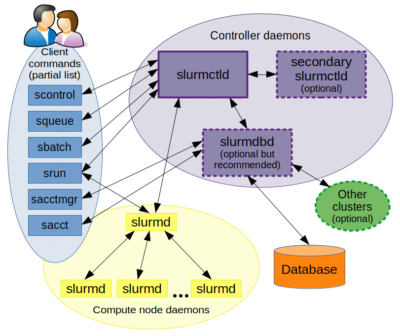
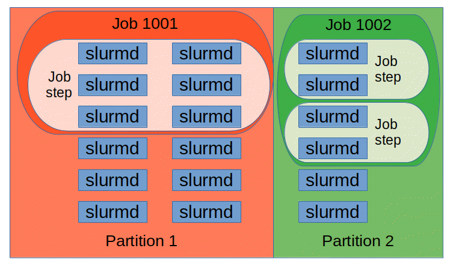

Slurm From Zero
Unless you have a dedicated cluster that is completely under your control, you will almost certainly share GPUs with other people through Slurm; and even when an HPC centre gives you a dedicated partition, you still go through Slurm to use it. This chapter is both the on-ramp and the reference. It starts with what a batch scheduler is, explains how Slurm is put together and what happens between typing sbatch and your processes running on GPUs, and then builds up to complete multi-node PyTorch jobs that survive preemption. Along the way it collects the day-to-day recipes that make Slurm bearable (reusing allocations, rejoining nodes, finding faulty nodes, emulating cron, ready-made launcher scripts), the settings that silently cost performance, and enough administration to understand, or do, what the people running the cluster do. It ends with a comparison against Kubernetes and the other orchestrators you'll meet.
Conventions:
- Nothing Slurm-related was run while writing this chapter. Slurm daemons need Linux and a cluster, and this chapter was written on a Mac. All
sinfo/squeue/sacct/scontroloutput below is sketched: it follows the real formats (as of Slurm 23.x-25.x), but the job IDs, node names and numbers are made up. All#SBATCHscripts and config files are untested as written. - The Python helpers (the output parser, the GPU-hours and fair-share calculator, the training script and a local
srunemulator) were run, on macOS with CPython 3.14 and PyTorch 2.15 on CPU. Their output is pasted as-is. Two shell one-liners from the recipes (the hostfile generator and the "Kill task failed" node-list extractor) were run on the same Mac against a stubscontrolthat only implementsshow hostnames; that is said where it applies. - Slurm's spelling: the project now writes "Slurm" (it used to be "SLURM", for Simple Linux Utility for Resource Management). Both appear in this book.
Prerequisites
- Linux and the OS: processes, users and UIDs, signals, cgroups, systemd. Slurm is a layer on top of all of these.
- Computer architecture: cores and hardware threads: what a "CPU" means to Slurm when hyper-threading is on.
- Networking: hostnames, ports, InfiniBand/RoCE. Multi-node training needs ranks to find each other over the network.
- Distributed systems: controllers, heartbeats, rendezvous, failure detection.
- Containers and virtualization: images and namespaces, for the containers-on-Slurm section.
- Linux and the OS: scripting essentials: every batch script here is a bash script (
set -euo pipefail,${VAR:-default},$(...),$((...))), and How torchrun spawns workers. - Distributed systems: core vocabulary: rank, local rank, world size, node rank,
MASTER_ADDR/MASTER_PORT, launcher. The Slurm environment variables below map onto exactly these. - GPU software stack: driver/toolkit compatibility (for containers) and NCCL's environment variables.
- Collectives internals: timeouts and hangs: why one dead rank makes every other rank hang in an all-reduce.
- Forward links (later chapters, not needed first): Kubernetes from zero and Orchestration internals, referenced for comparisons and for how the scheduler works inside.
Where the reference material lives in this chapter, if you are coming back to look something up:
- CPU cores per task and hyper-threads - the
--cpus-per-taskinheritance trap and whether to use hyper-threads. - Ready-made launcher scripts - complete
torchrun,accelerate, Lightning andsrunlauncher scripts, and theSLURM_PROCIDinterpolation trap. - Day-to-day user recipes - reusing and rejoining allocations, node lists, state codes, accounting, fair share, kill switches.
- Finding faulty nodes and py-spy on every node.
- Cron and self-perpetuating jobs.
- Admin recipes - pdsh, draining and undraining, safe reboots, changing time limits.
- Orchestration internals (a later chapter) - how
select/cons_tres, topology plugins, multifactor priority, backfill and preemption work inside.
Why a batch scheduler exists
The problem: many people, few GPUs, long jobs
A cluster is a set of computers (called nodes) connected by a fast network, with shared storage, that a group of people use together. An AI cluster typically has a few login nodes (where you SSH in, edit code and submit work) and tens to thousands of compute nodes (each with, say, 8 GPUs) where the work actually runs.
Without any software in charge, people would SSH into compute nodes and start jobs by hand. That breaks immediately:
- Two people start jobs on the same GPU and both run out of memory.
- A 64-node job needs 64 nodes free at the same time; nobody can coordinate that by hand.
- One person leaves 32 nodes idle overnight "reserved" with an open terminal.
- Nobody knows who used how much, so nobody can be held to a budget.
A batch scheduler (also called a workload manager or resource manager) is the program that owns the compute nodes. You don't run jobs on nodes; you describe what you need ("4 nodes with 8 GPUs each for 12 hours") and hand the scheduler a script. The scheduler puts the request in a queue, decides when and where it runs, starts it, enforces its limits, kills it when its time is up, and records what it used. "Batch" means the work runs unattended, not in your terminal.
you (login node) scheduler compute nodes
---------------- --------- -------------
sbatch train.sh -------> queue: [yours, bob's, ...]
"4 nodes free at 14:05?"
reserve gpu[001-004] ------> start train.sh on gpu001
(srun fans out to all 4)
squeue <------- "RUNNING, 3:12 elapsed"
time limit hit ------------> SIGTERM, then SIGKILL
sacct <------- accounting DB: 128 GPU-hours, COMPLETED
Why HPC and AI clusters use one
The key properties a training cluster needs, and that a batch scheduler provides, are:
| Need | What the scheduler does |
|---|---|
| Exclusive hardware | A GPU is given to exactly one job; cgroups stop other processes from even seeing it |
| Gang allocation | A multi-node job gets all its nodes at once or not at all (see why gang scheduling matters) |
| Fair sharing | Teams get priority in proportion to their entitled share, adjusted by how much they used recently |
| High utilization | Small jobs are "backfilled" into gaps while a big job waits for enough nodes |
| Time limits | Every job declares a maximum runtime, so the scheduler can plan and nobody holds nodes forever |
| Accounting | Every job's resource use is recorded per user and account |
Slurm is the dominant open-source batch scheduler: it runs a majority of the TOP500 (the twice-yearly list of the world's fastest supercomputers) and most academic and many industrial GPU clusters. It has been around for more than two decades, you are practically guaranteed to find it in any HPC environment, and most GPU cloud providers offer it. Alternatives you may hear of are PBS/Torque, LSF (IBM) and HTCondor, plus Kubernetes-based stacks (covered at the end, together with the other orchestrators). SchedMD, the company that develops Slurm, was acquired by NVIDIA (announced December 2025), with Slurm staying open source.
You can see the scheduler's view of a cluster with one command. This is the first thing to run on any new cluster:
$ sinfo
PARTITION AVAIL TIMELIMIT NODES STATE NODELIST
debug up 2:00:00 2 idle gpu[063-064]
gpu* up 2-00:00:00 2 drain gpu[007,031]
gpu* up 2-00:00:00 44 alloc gpu[001-006,008-030,032-046]
gpu* up 2-00:00:00 14 idle gpu[047-060]
cpu up 7-00:00:00 16 mix cpu[01-16]
(Sketched.) Reading it: the gpu partition (the * marks the default) has 44 nodes busy, 14 free and 2 taken out of service ("drained"); jobs there can run at most 2 days. The next sections define every one of these words.
Slurm architecture

(source)
The daemons
A daemon is a long-running background process, usually started by systemd. Slurm is three daemons plus a set of command-line tools:
| Daemon | Runs on | Port (default) | Job |
|---|---|---|---|
slurmctld |
1 controller node (+ optional backup) | 6817 | The brain. Holds the state of every node and job in memory, runs the scheduling loop, decides which job goes where |
slurmd |
Every compute node | 6818 | The hands. Reports node health and resources, launches and kills processes when the controller says so |
slurmdbd |
1 node (often the controller) | 6819 | Accounting. Writes job records, users, accounts and QoS to a MySQL/MariaDB database |
slurmrestd |
Optional | configurable | A REST API over the same RPCs, for dashboards and automation |
There is also slurmstepd, which is not a daemon you start: slurmd forks one slurmstepd per job step per node. It is the parent of your actual processes: it sets up their cgroup, switches to your user ID, sets the environment, forwards their stdout/stderr, collects their resource usage and reports their exit codes.
Why split it this way? The controller has to have one consistent view of the whole cluster to make gang-scheduling and fair-share decisions, so it is centralized (the distributed systems chapter explains why a single leader is the simple answer to consistency). The node daemons need to act locally and fast (start 8 processes, kill a runaway one) and keep working on a running job even if the controller briefly goes away. Accounting is a separate daemon so that a slow database never stalls scheduling, and so that several clusters can share one accounting database.
The controller saves its state to disk (StateSaveLocation), so restarting slurmctld does not lose the queue or kill running jobs; running jobs keep running under their slurmds while the controller is down.
On a cluster where you are a user you can still see all of this:
$ scontrol ping
Slurmctld(primary) at ctl01 is UP
Slurmctld(backup) at ctl02 is UP
$ scontrol show config | grep -E '^(ClusterName|SlurmctldHost|SLURM_VERSION|SelectType|SchedulerType|PriorityType|AuthType|ProctrackType|TaskPlugin)'
AuthType = auth/munge
ClusterName = tiny
PriorityType = priority/multifactor
ProctrackType = proctrack/cgroup
SchedulerType = sched/backfill
SelectType = select/cons_tres
SLURM_VERSION = 24.11.1
SlurmctldHost[0] = ctl01
SlurmctldHost[1] = ctl02
TaskPlugin = task/cgroup,task/affinity
(Sketched.)
Authentication: munge
Every message between Slurm components says "this request comes from user alice, UID 1001". Something must stop a user from forging "I am root". Slurm's traditional answer is MUNGE (MUNGE Uid 'N' Gid Emporium), a tiny authentication service:
- Every node in the cluster runs the
mungeddaemon and has the same secret key in/etc/munge/munge.key. - When
sbatchsends a request, it asks the localmungedto create a credential: your UID and GID plus a timestamp, encrypted and signed with the shared key. Onlymunged(running as themungeuser) can read the key, so a user cannot forge a credential for someone else. - The receiving daemon asks its own
mungedto decode it. If the key matches and the timestamp is recent (default TTL 300 s), it trusts the UID.
Consequences: the key must be identical on every node, and clocks must be synchronized (run NTP/chrony), or credentials are rejected as expired or "rewound". Since Slurm 23.11 there is also a built-in auth/slurm plugin that uses a shared slurm.key instead of munge; most existing clusters still use munge.
Testing munge is the first step when "nothing works":
$ munge -n | unmunge | grep -E 'STATUS|UID'
STATUS: Success (0)
UID: alice (1001)
$ munge -n | ssh gpu001 unmunge | grep STATUS # cross-node: proves keys and clocks match
STATUS: Success (0)
(Sketched; this is the standard check from the munge docs.)
The config files
All of these live in /etc/slurm/ (or wherever the site installed Slurm):
| File | Read by | What it says |
|---|---|---|
slurm.conf |
everything | Cluster name, controller host, plugins, scheduling and priority settings, every node and partition |
gres.conf |
slurmd |
Which GPUs (and other generic resources) each node has, which device files, which CPU cores are close to them |
cgroup.conf |
slurmd |
Which limits to enforce with cgroups (cores, memory, devices) |
slurmdbd.conf |
slurmdbd only |
Database host, user and password (so it is mode 600, owned by the slurm user) |
topology.conf |
slurmctld |
Optional switch hierarchy for network-aware placement (see internals) |
plugstack.conf |
srun, slurmd |
Optional SPANK plugins (shared libraries that srun and slurmd load to add flags and hooks), e.g. Pyxis for containers |
slurm.conf must be identical on all nodes (Slurm warns if hashes differ). Larger sites use configless mode: the controller serves the config files and each slurmd fetches them at startup (SlurmctldParameters=enable_configless on the controller, slurmd --conf-server ctl01 on nodes). A minimal working set of these files is in the admin section.
What happens from sbatch to processes on nodes
This is the most useful picture in the chapter. Follow a 2-node, 16-GPU job:
login node ctl01: slurmctld gpu001: slurmd gpu002: slurmd
---------- ---------------- -------------- --------------
sbatch train.sh
| munge cred + script + env
+-----------------------> 1. validate: account? QoS? limits?
<----- "Submitted 4242" store job, state=PENDING
2. scheduling loop / backfill:
priority order, find 2 free nodes
state=RUNNING, nodes=gpu[001-002]
3. send batch-launch RPC ---------> 4. prolog (if configured)
fork slurmstepd (step "batch")
cgroup, setuid(alice), env
exec: bash train.sh
|
5. srun python train.py
<-------- "create step 4242.0" ----------+
6. grant step, sign credential
-----------------------------------> slurmd ------------------> slurmd
7. slurmstepd (step 0) slurmstepd (step 0)
fork 8 tasks fork 8 tasks
SLURM_PROCID=0..7 SLURM_PROCID=8..15
stdout/stderr ------> srun (gpu001) --> slurm-4242.out
8. tasks exit; codes -> srun -> batch shell exits
<------------------------- 9. job complete, epilog, nodes freed (state CG -> idle)
10. slurmdbd: write accounting record
Step by step:
sbatchreads your script, pulls out the#SBATCHlines, and sends the whole script plus your current environment toslurmctld. The controller checks your account, QoS and limits, assigns a job ID, and stores the job asPENDING.sbatchreturns immediately; the script has not started.- The scheduler runs whenever something changes (a job ends, a job is submitted) and periodically as backfill (default every 30 s). It walks pending jobs in priority order and finds nodes. When it finds a fit it marks the job
RUNNINGand records the allocation. - The controller sends the script to
slurmdon the first node of the allocation (the "batch host"). - That
slurmdruns the site's prolog if there is one (a script the admins configure to run on each node just before a job starts, typically a quick GPU health check; its counterpart, the epilog, runs just after the job ends), forks aslurmstepdfor the special batch step, which creates a cgroup, drops privileges to your UID, setsSLURM_*variables and runs your script with bash. Your script runs on one node only, on one CPU core by default. - Inside the script you call
srun.srunis how work reaches the other nodes. srunasks the controller to create a job step inside the existing allocation. The controller checks it fits and signs a credential.sruncontactsslurmdon every node of the step (with large jobs, through a fan-out tree,TreeWidth), each forks aslurmstepdfor that step, which forks the tasks (your processes) and sets per-task variables likeSLURM_PROCID. stdout/stderr from all tasks is streamed back tosrun, which writes it to the job's output file.- When all tasks exit,
srunreturns the highest exit code. The batch script continues; when it exits, the job ends. slurmdruns the epilog, kills any leftover processes in the job's cgroups, and the nodes return toidle. While this cleanup runs the job shows stateCG(completing).- The controller sends the final record (start, end, nodes, exit code, TRES used: the CPUs, memory and GPUs consumed; TRES is defined below) to
slurmdbd.
The two most common beginner mistakes both come from this picture: running python train.py in the batch script without srun (it runs once, on one node, while the other nodes sit idle), and expecting SLURM_PROCID in the batch script to differ per rank (it is 0, because the batch script is one process; see early interpolation).
Core concepts

(source)
Nodes, partitions, and node states
- A node is one computer, as Slurm knows it: a name, a CPU layout (sockets, cores, threads), memory, GRES (GPUs) and features (free-form tags like
h100,ib, which jobs can require with--constraint). - A partition is a named group of nodes with its own policy: maximum time limit, who may use it, default and maximum resources per job, priority tier. Think of it as a queue. A node can be in several partitions (e.g.
gpuandgpu-preempt). On the command line,-pselects one.
Node states you'll see in sinfo (full list in node state codes):
| State | Meaning |
|---|---|
idle |
Up, nothing running |
alloc |
Fully allocated |
mix |
Partly allocated (some cores/GPUs free) |
drain / drng |
An admin or health check took it out of service; drng = still running a job that will finish first |
down |
Slurm can't reach slurmd, or it was marked down |
comp |
Jobs completing (epilog / killing processes) |
resv |
In a reservation |
* suffix (idle*) |
Not responding |
$ scontrol show node gpu007
NodeName=gpu007 Arch=x86_64 CoresPerSocket=48
CPUAlloc=0 CPUEfctv=192 CPUTot=192 CPULoad=0.03
AvailableFeatures=h100,ib
ActiveFeatures=h100,ib
Gres=gpu:h100:8(S:0-1)
NodeAddr=gpu007 NodeHostName=gpu007 Version=24.11.1
RealMemory=2000000 AllocMem=0 FreeMem=1984211 Sockets=2 Boards=1
State=IDLE+DRAIN ThreadsPerCore=2 TmpDisk=0 Weight=1
Partitions=gpu
CfgTRES=cpu=192,mem=2000000M,billing=192,gres/gpu=8
AllocTRES=
Reason=XID 79 GPU fell off the bus [root@2026-11-03T09:12:44]
(Sketched.) The Reason on a drained node is the first place to look when a node is missing. CfgTRES is what the node offers; AllocTRES is what is currently given out.
Jobs, allocations, steps and tasks
This is the mental model that makes everything else make sense:
- A job is a request plus, once granted, an allocation: a reserved set of resources (specific nodes, cores, memory, GPUs) for a period of time. The allocation is like a booking. It does nothing on its own.
- A job step is a set of processes launched inside the allocation, by
srun. A job can run many steps one after another (or several at the same time if they fit). Steps are numbered4242.0,4242.1, ...; there are also special steps:4242.batch(the batch script itself),4242.extern(processes that entered the job from outside, e.g. via SSH withpam_slurm_adopt: a PAM module, i.e. a plugin to Linux's login-authentication stack, that lets you SSH into a node only while you have a job there and puts your SSH session into that job's cgroup) and4242.interactive(the shell started bysallocon some configurations). - A task is one process of a step. For PyTorch launched by
srun, one task = one GPU = one rank. Fortorchrun, one task per node, andtorchrunspawns the per-GPU workers itself.
job 4242 (allocation: gpu[001-002], 16 GPUs, 192 CPUs/node, 12h)
├── 4242.batch bash train.sh on gpu001 only, 1 task
├── 4242.extern (ssh sessions, if allowed)
├── 4242.0 srun python prep.py 1 task on gpu001
└── 4242.1 srun python train.py 16 tasks: 8 on gpu001, 8 on gpu002
├── task 0 (SLURM_PROCID=0, SLURM_LOCALID=0, node 0)
├── ...
└── task 15 (SLURM_PROCID=15, SLURM_LOCALID=7, node 1)
sbatch creates a job and runs its batch step. salloc creates a job and gives you a shell. srun creates a step inside an existing job; if you run srun outside any job, it first creates a job (allocation) and then a step in it, all in one go. The sacct view of a running job shows the same structure:
$ sacct -j 4242 --format=JobID,JobName%12,AllocCPUS,State,ExitCode,Elapsed
JobID JobName AllocCPUS State ExitCode Elapsed
------------ ------------ ---------- ---------- -------- ----------
4242 train.sh 384 RUNNING 0:0 03:12:40
4242.batch batch 192 RUNNING 0:0 03:12:40
4242.extern extern 384 RUNNING 0:0 03:12:40
4242.0 python 1 COMPLETED 0:0 00:00:31
4242.1 python 384 RUNNING 0:0 03:12:01
(Sketched.)
CPUs, memory, GPUs, GRES and TRES
- CPU in Slurm means whatever the node exposes as the smallest allocatable unit: usually a hardware thread if hyper-threading is on (
ThreadsPerCore=2), so a 2x48-core node isCPUs=192. See hyper-threads on or off. - Memory is requested per node (
--mem), per CPU (--mem-per-cpu) or per GPU (--mem-per-gpu), in MB by default.--mem=0means "all of the node's memory". - GRES (generic resources) are countable devices that aren't CPUs or memory, defined in
gres.conf. GPUs aregpu, optionally typed:gpu:h100:8. You request them with--gres=gpu:8(per node) or the newer--gpus-per-node=8,--gpus=16(per job) or--gpus-per-task=1. - TRES (trackable resources) is the umbrella accounting name:
cpu,mem,node,gres/gpu,billing, etc. Limits and accounting are expressed in TRES:MaxTRESPerUser=gres/gpu=16.
When a job gets GPUs, Slurm sets CUDA_VISIBLE_DEVICES for its processes, and with ConstrainDevices=yes in cgroup.conf the other GPUs' device files are blocked by the cgroup, so the job physically cannot touch them.
$ srun -p gpu --gpus-per-node=2 --pty bash -c 'echo CUDA_VISIBLE_DEVICES=$CUDA_VISIBLE_DEVICES SLURM_JOB_GPUS=$SLURM_JOB_GPUS; nvidia-smi -L'
CUDA_VISIBLE_DEVICES=0,1 SLURM_JOB_GPUS=4,5
GPU 0: NVIDIA H100 80GB HBM3 (UUID: GPU-...)
GPU 1: NVIDIA H100 80GB HBM3 (UUID: GPU-...)
(Sketched.) --pty attaches your terminal to the task, so an interactive command (here a one-off bash -c, elsewhere a shell) behaves as if run locally. The job got physical GPUs 4 and 5 (SLURM_JOB_GPUS), but inside the cgroup it sees only two devices, numbered 0 and 1. Code should always use local indices (LOCAL_RANK), never hard-coded physical ones.
Accounts, associations, QoS and fair share
These live in the accounting database run by slurmdbd; sacctmgr is the command that queries and edits it (users can read, admins can write).
- An account is a billing bucket in the accounting database, usually a team or project (
research,inference). Accounts form a tree underroot. You submit with--account=research(or get your default). - An association is a (cluster, account, user, partition) tuple. Limits and fair-share shares are attached to associations. "AssocGrpGRES" in a pending reason means a limit on your association is hit.
- A QoS (quality of service) is a named policy you can attach to jobs: a priority boost, limits (
MaxTRESPerUser,MaxWall,GrpTRES), and preemption relationships ("highcan preemptlow").--qos=high. Typical sites havenormal,high(limited),low/preemptible(cheap, can be killed). - Fair share: each account has a share (e.g. 25% of the cluster). Its recent usage, decayed with a half-life (default 7 days), is compared to its share; use more than your share and your jobs' priority drops. The formula and the multifactor priority are in internals; a calculator is below.
$ sacctmgr show assoc user=$USER format=Cluster,Account,User,Partition,Share,QOS%30,DefaultQOS,GrpTRES%20
Cluster Account User Partition Share QOS Def QOS GrpTRES
---------- ---------- ---------- ---------- --------- ------------------------------ --------- --------------------
tiny research alice 1 high,low,normal normal
$ sacctmgr show qos format=Name,Priority,MaxWall,MaxTRESPU%20,GrpTRES%20,Preempt,PreemptMode
Name Priority MaxWall MaxTRESPU GrpTRES Preempt PreemptMode
---------- ---------- ----------- -------------------- -------------------- ---------- -----------
normal 0 2-00:00:00 low requeue
high 1000 1-00:00:00 gres/gpu=64 low requeue
low 0 7-00:00:00 requeue
$ sprio -l -j 4261
JOBID PARTITION USER ACCOUNT PRIORITY SITE AGE FAIRSHARE JOBSIZE PARTITION QOS
4261 gpu bob ablate 4180 0 120 3930 130 0 0
(Sketched.) sprio shows the components of a pending job's priority; sshare (shown in FairShare scores) shows usage and fair-share factors.
Looking at the cluster: sinfo, squeue, sacct, scontrol
Four commands answer almost every question. sinfo = the nodes, squeue = the queue now, sacct = history (from the database), scontrol = the controller's full record of anything.
sinfo: what hardware exists and what state it's in
$ sinfo -N -p gpu -o "%N %t %C %G %m %f" | head -5 # per node: state, CPUs A/I/O/T, GRES, mem, features
NODELIST STATE CPUS(A/I/O/T) GRES MEMORY AVAIL_FEATURES
gpu001 alloc 192/0/0/192 gpu:h100:8(S:0-1) 2000000 h100,ib
gpu002 mix 96/96/0/192 gpu:h100:8(S:0-1) 2000000 h100,ib
gpu007 drain 0/0/192/192 gpu:h100:8(S:0-1) 2000000 h100,ib
gpu047 idle 0/192/0/192 gpu:h100:8(S:0-1) 2000000 h100,ib
$ sinfo -R # why nodes are down/drained
REASON USER TIMESTAMP NODELIST
XID 79 GPU fell off the bus root 2026-11-03T09:12:44 gpu007
NHC: ib0 link down root 2026-11-04T22:01:03 gpu031
$ sinfo -s # summary: A/I/O/T = allocated/idle/other/total
PARTITION AVAIL TIMELIMIT NODES(A/I/O/T) NODELIST
debug up 2:00:00 0/2/0/2 gpu[063-064]
gpu* up 2-00:00:00 44/14/2/60 gpu[001-060]
cpu up 7-00:00:00 16/0/0/16 cpu[01-16]
(Sketched.) NHC: reasons come from the node health check script (LBNL NHC, configured in the admin section), which drains a node automatically when a check fails. To see how many GPUs are actually free you need per-node GRES usage: sinfo -N -O "NodeList:10,StateCompact:8,Gres:22,GresUsed:30" (the -O/--Format field names are in man sinfo; GresUsed exists in recent versions).
squeue: what is queued and running
$ squeue -p gpu
JOBID PARTITION NAME USER ST TIME NODES NODELIST(REASON)
4261 gpu big-run bob PD 0:00 64 (Resources)
4260 gpu ablation bob PD 0:00 4 (Priority)
4251_[3-9] gpu sweep alice PD 0:00 1 (QOSMaxGRESPerUser)
4250 gpu eval-ckp alice PD 0:00 1 (Dependency)
4242 gpu pretrain alice R 1-02:11:09 16 gpu[001-016]
4251_2 gpu sweep alice R 12:01 1 gpu017
(Sketched.) Columns: ST is the state code (PD pending, R running, CG completing, CF configuring/booting nodes, S suspended; full list in job state codes). For running jobs the last column is the node list; for pending jobs it is the reason in parentheses. 4251_[3-9] is a job array with tasks 3-9 still pending.
Useful variants:
squeue --me # only my jobs (Slurm 20.11+)
squeue --me --start # estimated start times for pending jobs (from backfill)
squeue --me -o "%.10i %.20j %.2t %.10M %.10l %.6D %b %R" # id, name, state, elapsed, limit, nodes, tres-per-node, reason
squeue -h -o '%i|%u|%P|%j|%T|%M|%D|%b|%R' # machine-readable, no header: feed to the parser below
The --start estimate is only as good as other users' --time values, since backfill plans with time limits, not real runtimes.
sacct: what happened
squeue forgets a job a few minutes after it ends (MinJobAge); sacct asks slurmdbd and remembers everything.
$ sacct -X -S now-2days --format=JobID,JobName%15,State,ExitCode,Elapsed,AllocTRES%50,NodeList
JobID JobName State ExitCode Elapsed AllocTRES NodeList
------------ --------------- ---------- -------- ---------- -------------------------------------------------- ---------------
4100 pretrain-7b COMPLETED 0:0 10:00:00 billing=1536,cpu=1536,gres/gpu=128,mem=16000G,node+ gpu[001-016]
4101 pretrain-7b FAILED 1:0 00:03:12 billing=1536,cpu=1536,gres/gpu=128,mem=16000G,node+ gpu[001-016]
4102 ablation TIMEOUT 0:15 2-00:00:00 billing=96,cpu=96,gres/gpu=8,mem=1000G,node=1 gpu033
4104 tok-eval OUT_OF_ME+ 0:125 00:45:00 billing=12,cpu=12,gres/gpu=1,mem=120G,node=1 gpu040
(Sketched.) -X shows only the allocation line, not the steps. ExitCode is code:signal: 1:0 means the process exited with code 1 (a Python exception), 0:15 means it was killed by signal 15 (SIGTERM, here from the time limit). 0:125 on an OUT_OF_MEMORY job is not a real signal number: it is Slurm's internal OOM marker (253) squeezed into the 7-bit signal field. %15 widens a column; + means truncated. For scripts, always use -P (--parsable2, |-separated, no truncation):
sacct -X -P -S now-7days -o JobID,User,State,Elapsed,AllocTRES,ExitCode
scontrol: the full record, and changing things
$ scontrol show job 4242
JobId=4242 JobName=pretrain-7b
UserId=alice(1001) GroupId=alice(1001) MCS_label=N/A
Priority=12150 Nice=0 Account=research QOS=normal
JobState=RUNNING Reason=None Dependency=(null)
Requeue=1 Restarts=0 BatchFlag=1 Reboot=0 ExitCode=0:0
RunTime=1-02:11:09 TimeLimit=2-00:00:00 TimeMin=N/A
SubmitTime=2026-11-04T08:01:12 EligibleTime=2026-11-04T08:01:12
StartTime=2026-11-04T08:03:40 EndTime=2026-11-06T08:03:40 Deadline=N/A
Partition=gpu AllocNode:Sid=login01:88123
NodeList=gpu[001-016] BatchHost=gpu001
NumNodes=16 NumCPUs=3072 NumTasks=128 CPUs/Task=24 ReqB:S:C:T=0:0:*:*
ReqTRES=cpu=3072,mem=32000000M,node=16,billing=3072,gres/gpu=128
AllocTRES=cpu=3072,mem=32000000M,node=16,billing=3072,gres/gpu=128
Command=/home/alice/run/pretrain.sbatch
WorkDir=/home/alice/run
StdOut=/home/alice/run/logs/pretrain-7b-4242.out
TresPerNode=gres/gpu:8
(Sketched.) Everything about the job is here: BatchHost (where the script runs), Restarts (how many times it was requeued), EndTime (when the time limit hits), StdOut (where the log is). Users can modify their own pending jobs, within limits:
scontrol hold 4260 # keep it pending
scontrol release 4260
scontrol update job 4260 TimeLimit=6:00:00 # users can lower a limit; raising needs an admin
scontrol update job 4260 Partition=debug
scontrol show hostnames gpu[001-003,007] # expand a node list: one host per line
scancel 4260 # cancel; scancel --me --state=PENDING cancels all my pending jobs
Interactive work: salloc and srun
Getting an allocation with salloc
salloc requests an allocation and gives you a shell while it lasts. It is how you debug on real GPUs.
login01$ salloc -p gpu --nodes=1 --gpus-per-node=8 --cpus-per-task=96 --time=2:00:00
salloc: Pending job allocation 4270
salloc: job 4270 queued and waiting for resources
salloc: job 4270 has been allocated resources
salloc: Granted job allocation 4270
salloc: Waiting for resource configuration
salloc: Nodes gpu047 are ready for job
gpu047$ nvidia-smi -L | wc -l
8
gpu047$ exit
salloc: Relinquishing job allocation 4270
(Sketched.) Where the shell runs depends on the site: with LaunchParameters=use_interactive_step (common on recent installs) you land on the first compute node, as above. Without it, the shell stays on the login node with SLURM_JOB_ID set, and you must use srun to run anything on the allocated node. Check with hostname before running anything heavy. Exiting the shell releases the allocation; to keep it alive across disconnects see keeping an salloc alive and rejoining it.
srun: launching a step
Inside any allocation (salloc shell or sbatch script), srun launches tasks across the allocated nodes:
gpu047$ srun --ntasks=4 -l hostname # -l / --label prefixes each line with the task number
0: gpu047
2: gpu047
1: gpu047
3: gpu047
login01$ salloc -p gpu -N2 --ntasks-per-node=8 --gpus-per-node=8 -t 1:00:00
gpu001$ srun -l bash -c 'echo rank=$SLURM_PROCID local=$SLURM_LOCALID node=$SLURM_NODEID host=$(hostname)' | sort -n | sed -n '1p;8,9p;16p'
0: rank=0 local=0 node=0 host=gpu001
7: rank=7 local=7 node=0 host=gpu001
8: rank=8 local=0 node=1 host=gpu002
15: rank=15 local=7 node=1 host=gpu002
(Sketched.) sed -n '1p;8,9p;16p' prints only lines 1, 8-9 and 16 (; separates sed commands), to keep the output short. Note the single quotes: $SLURM_PROCID must be expanded by each task's shell, not by your shell before srun runs. srun without an allocation gets one first, which is the fastest way to grab a GPU shell:
srun -p debug --gpus=1 --cpus-per-task=16 --time=30:00 --pty bash # --pty: attach a terminal to task 0
srun --jobid=4242 --overlap --pty bash # a shell inside your running job, to inspect it
--overlap lets the new step share resources already used by the running training step, which otherwise would block the new step from starting.
Batch jobs: sbatch and its directives
A first batch script
A batch script is a bash script whose leading #SBATCH comments are read by sbatch as command-line options (anything on the sbatch command line overrides them). They must come before the first non-comment line.
#!/bin/bash
#SBATCH --job-name=hello
#SBATCH --partition=debug
#SBATCH --nodes=1
#SBATCH --ntasks=1
#SBATCH --cpus-per-task=4
#SBATCH --gpus-per-node=1
#SBATCH --time=00:10:00
#SBATCH --output=logs/%x-%j.out
set -euo pipefail
echo "job $SLURM_JOB_ID on $(hostname), GPUs: $CUDA_VISIBLE_DEVICES"
srun python -c 'import torch; print(torch.cuda.get_device_name(0))'
$ mkdir -p logs && sbatch hello.sbatch
Submitted batch job 4280
$ sbatch --parsable hello.sbatch # just the ID, for scripts: JOB=$(sbatch --parsable ...)
4281
$ cat logs/hello-4280.out
job 4280 on gpu063, GPUs: 0
NVIDIA H100 80GB HBM3
(Sketched.) The logs/ directory must exist before the job starts: Slurm does not create it, and a job whose output file can't be opened fails immediately with no log at all.
The directives that matter
| Directive | Meaning and advice |
|---|---|
--job-name=NAME |
Shown in squeue; %x in file names. Name it after the experiment |
--partition=P |
Which partition (queue) |
--account=A |
Which account to bill; required on many clusters |
--qos=Q |
Which QoS (priority, limits, preemptibility) |
--nodes=N |
Number of nodes. --nodes=2-4 allows a range |
--ntasks-per-node=K |
Tasks per node that srun launches. 8 for srun-launched ranks on 8-GPU nodes, 1 for torchrun |
--ntasks=T |
Total tasks (alternative to per-node) |
--cpus-per-task=C |
Cores per task: dataloader workers and threads live here. Total cores / tasks per node |
--gpus-per-node=G / --gres=gpu:G |
GPUs per node. --gres=gpu:h100:8 to require a type |
--gpus-per-task=1 |
One GPU bound to each task. Can stop CUDA IPC/NVLink P2P (one process reading another process's GPU memory directly) between tasks if devices are cgrouped per task; most training scripts use --gpus-per-node and pick by LOCAL_RANK |
--mem=M / --mem=0 |
Memory per node; 0 = all of it. Default is often small (DefMemPerCPU), a common silent OOM cause |
--time=T |
Time limit: MM, HH:MM:SS, D-HH:MM:SS. Hard kill when reached. Shorter = backfills sooner |
--exclusive |
Whole nodes, nobody else on them, even if you didn't request all CPUs/GPUs |
--output=F / --error=F |
Log paths. %j job ID, %x job name, %N first node, %A/%a array job/task ID. If only --output, stderr goes there too |
--open-mode=append |
Append instead of truncating; required for requeued jobs or each restart erases the log |
--signal=[B:]SIG@SECS |
Send SIG this many seconds before the time limit (±60 s). B: = only the batch shell; without it, all step tasks |
--requeue / --no-requeue |
Whether the job may be requeued after node failure or preemption |
--dependency=TYPE:ID |
Start only after another job; see below |
--array=0-99%8 |
Job array: 100 tasks, at most 8 at once |
--constraint=FEAT |
Only nodes with this feature (--constraint=h100&ib) |
--exclude=NODES / --nodelist=NODES |
Avoid / require specific nodes. --exclude is how you dodge a known-bad node |
--switches=1@2:00:00 |
Topology: at most 1 leaf switch, wait up to 2 h for it (internals) |
--hint=nomultithread |
Use physical cores only |
--export=ALL / NONE / VAR=val |
Which environment to pass in (default ALL); see which environment the job inherits |
--chdir=DIR |
Working directory (default: where you ran sbatch) |
--mail-type=END,FAIL --mail-user=me@x |
Email on events, if the site configured mail |
--begin=now+1hour |
Don't start before this time |
--reservation=R |
Run in an admin-created reservation |
--wait-all-nodes=1 |
Don't start the script until every node has booted (clusters that power nodes up on demand) |
You can check what Slurm would do with a script without submitting it:
$ sbatch --test-only train.sbatch
sbatch: Job 4290 to start at 2026-11-05T19:40:00 using 384 processors on nodes gpu[047-048] in partition gpu
(Sketched; --test-only validates the request and returns a start estimate, it doesn't queue the job.)
A complete single-node GPU job
#!/bin/bash
#SBATCH --job-name=sft-1node
#SBATCH --partition=gpu
#SBATCH --account=research
#SBATCH --nodes=1
#SBATCH --ntasks-per-node=8 # one task (= one rank) per GPU
#SBATCH --gpus-per-node=8
#SBATCH --cpus-per-task=24 # 192 CPUs / 8 tasks
#SBATCH --mem=0 # all node memory
#SBATCH --exclusive
#SBATCH --time=08:00:00
#SBATCH --output=logs/%x-%j.out
set -euo pipefail
cd "$SLURM_SUBMIT_DIR"
# reconstructibility: record what ran
echo "job=$SLURM_JOB_ID nodes=$SLURM_JOB_NODELIST sha=$(git rev-parse HEAD) dirty=$(git status --porcelain | wc -l)"
git diff > "logs/${SLURM_JOB_ID}.diff"
scontrol show job "$SLURM_JOB_ID" > "logs/${SLURM_JOB_ID}.job"
source .venv/bin/activate
export MASTER_ADDR=$(hostname)
export MASTER_PORT=$((10000 + SLURM_JOB_ID % 50000))
export OMP_NUM_THREADS=$SLURM_CPUS_PER_TASK
export SRUN_CPUS_PER_TASK=$SLURM_CPUS_PER_TASK # srun may not inherit it, see "CPU cores per task" below
srun --kill-on-bad-exit=1 python -u train.py --config configs/sft.yaml
Untested. train.py is the script in the multi-node section; it reads SLURM_PROCID/SLURM_LOCALID itself. git status --porcelain prints one line per modified file, so dirty=0 means a clean tree. --kill-on-bad-exit=1 kills all ranks as soon as one exits non-zero (instead of leaving the rest hung in a collective), and python -u disables output buffering so log lines appear immediately.
CPU cores per task and hyper-threads
Two Slurm settings decide how many CPU cores your processes actually get, and both fail silently: the job runs, just slower. This section is about those two.
srun may not inherit the CPU count
A training process needs CPU cores: at least one for the Python process that drives each GPU, plus a few more for its DataLoader worker processes, all running in parallel. With 8 GPUs per node and 2 DataLoader workers per GPU, that is at least 8 \cdot (1 + 2) = 24 cores per node.
You ask for cores with --cpus-per-task on sbatch or salloc. Originally srun inherited that value, so a script like this gave myprogram 48 cores:
#SBATCH --cpus-per-task=48
[...]
srun myprogram
That changed. From the sbatch man page:
NOTE: Beginning with 22.05, srun will not inherit the --cpus-per-task value requested by salloc or sbatch. It must be requested again with the call to srun or set with the SRUN_CPUS_PER_TASK environment variable if desired for the task(s).
So with the script above, on a current Slurm, myprogram gets 1 core (unless the site changed srun's default), and its 16 DataLoader workers share it. In practice the change landed somewhere in the 22.05 series: Slurm 22.05.09 was observed to still inherit the value, and the whole 23.x series doesn't.
You can check what a process may run on with os.sched_getaffinity(0), which returns the set of CPU cores the kernel will schedule the calling process on (Linux only; the cgroup and CPU-affinity mechanics are in Linux and the OS). A test job:
#!/bin/bash
#SBATCH --job-name=test-cpu-cores-per-task
#SBATCH --nodes=1
#SBATCH --ntasks-per-node=1
#SBATCH --cpus-per-task=48 # adapt to your env if you have less than 48 cpu cores
#SBATCH --time=0:10:00
#SBATCH --partition=x # adapt to your env to the right partition name
#SBATCH --output=%x-%j.out
srun python -c 'import os; print(f"visible cpu cores: {len(os.sched_getaffinity(0))}")'
Untested. How to read the output: visible cpu cores: 48 means you are not affected; visible cpu cores: 1, or anything below 48, means srun did not inherit the value. Any of these three fixes works:
#SBATCH --cpus-per-task=48
[...]
srun --cpus-per-task=48 myprogram # 1. repeat it on srun
#SBATCH --cpus-per-task=48
[...]
export SRUN_CPUS_PER_TASK=48 # 2. srun reads this variable
srun myprogram
#SBATCH --cpus-per-task=48
[...]
export SRUN_CPUS_PER_TASK=$SLURM_CPUS_PER_TASK # 3. write once, never think about it again
srun myprogram
The third form is what every script in this chapter uses.
Hyper-threads on or off
A physical core can expose two hardware threads (Intel calls this Hyper-Threading, HT; the generic name is simultaneous multithreading, SMT; see cores and hardware threads). If the CPUs have it enabled, Slurm counts each hardware thread as one "CPU" and uses them by default. To get one thread per physical core instead, add --hint=nomultithread.
Example: a node with 2 CPU sockets of 24 cores each and 2 threads per core has 2 \cdot 24 \cdot 2 = 96 hardware threads, or 48 physical cores. To use the whole node:
#SBATCH --cpus-per-task=96 # with hyper-threads: all 96 threads
or, without hyper-threads:
#SBATCH --cpus-per-task=48 # one thread per physical core: 48 "CPUs"
#SBATCH --hint=nomultithread
To check whether a node has hyper-threading on:
$ lscpu | grep Thread
Thread(s) per core: 2
(Sketched.) 2 means HT is enabled, 1 means it isn't.
Which is faster depends on the workload and, surprisingly, on the network setup, so measure both and keep the winner. Two observations from real clusters that point in opposite directions:
- On some AWS setups the all-reduce throughput degraded dramatically when
--hint=nomultithreadwas used. - On AWS p4 nodes (AWS's 8x A100 instance type), enabling HT made the network throughput 4x slower, so HT was kept disabled on that setup from then on.
One variable at a time: run the same job with and without --hint=nomultithread (and the matching --cpus-per-task), and compare both step time and an all-reduce benchmark (network measuring).
Job arrays and dependencies
Job arrays: many similar jobs
A job array is one submission that creates many jobs differing only in SLURM_ARRAY_TASK_ID. Use it for sweeps, evaluation over many checkpoints, or data preprocessing shards. It is much lighter on the controller than a for-loop of sbatch calls.
#!/bin/bash
#SBATCH --job-name=lr-sweep
#SBATCH --partition=gpu
#SBATCH --array=0-11%4 # 12 tasks, at most 4 running at once
#SBATCH --gpus-per-node=1
#SBATCH --cpus-per-task=12
#SBATCH --time=02:00:00
#SBATCH --output=logs/%x-%A_%a.out # %A = array job id, %a = task index
set -euo pipefail
LRS=(1e-4 2e-4 3e-4 6e-4) # bash array: (a b c); ${LRS[i]} is element i, 0-based
SEEDS=(0 1 2)
LR=${LRS[$((SLURM_ARRAY_TASK_ID % 4))]}
SEED=${SEEDS[$((SLURM_ARRAY_TASK_ID / 4))]}
echo "task $SLURM_ARRAY_TASK_ID of $SLURM_ARRAY_TASK_COUNT: lr=$LR seed=$SEED"
srun python -u train_small.py --lr "$LR" --seed "$SEED" --out "runs/lr${LR}_s${SEED}"
$ sbatch lr-sweep.sbatch
Submitted batch job 4300
$ squeue --me -n lr-sweep
JOBID PARTITION NAME USER ST TIME NODES NODELIST(REASON)
4300_[4-11] gpu lr-sweep alice PD 0:00 1 (JobArrayTaskLimit)
4300_0 gpu lr-sweep alice R 1:03 1 gpu050
4300_1 gpu lr-sweep alice R 1:03 1 gpu050
4300_2 gpu lr-sweep alice R 1:03 1 gpu051
4300_3 gpu lr-sweep alice R 1:03 1 gpu051
$ scontrol update job 4300 ArrayTaskThrottle=8 # change the %4 limit while it runs
$ scancel 4300_7 # cancel one task
(Sketched; untested.) Each task is a separate job with its own ID in sacct (4300_0, ...). The maximum array index is MaxArraySize (default 1001, so indices 0-1000). Job arrays can also chain a long training run through repeated time slots with %1; see job array trains.
A toy array to watch
To see how an array behaves before trusting it with a training run, submit ten tiny jobs that run one at a time:
#!/bin/bash
#SBATCH --job-name=array-test
#SBATCH --nodes=1
#SBATCH --ntasks-per-node=1
#SBATCH --cpus-per-task=1
#SBATCH --time 00:02:00
#SBATCH --output=%x-%j.out # stdout
#SBATCH --error=%x-%j.out # stderr into the same file, so there is one file to watch
#SBATCH --partition=dev
echo $SLURM_JOB_ID
echo "I am job ${SLURM_ARRAY_JOB_ID}_${SLURM_ARRAY_TASK_ID}"
date
sleep 10
date
$ sbatch --array=1-10%1 array-test.slurm
$ squeue -u `whoami` -o "%.10i %9P %26j %.8T %.10M %.6D %.20S %R"
JOBID PARTITION NAME STATE TIME NODES START_TIME NODELIST(REASON)
591970_[2- dev array-test PENDING 0:00 1 2021-07-28T20:01:06 (JobArrayTaskLimit)
(Sketched; untested.) --array can be on the command line, as here, or in the script as #SBATCH --array=1-10%1. %1 limits the array to one running task at a time; without it Slurm tries to run all ten at once, which is what you want for a sweep and not for a training run. How to read the squeue line: 591970_[2- is the truncated 591970_[2-10%1], the tasks 2 to 10 of array 591970 that haven't started yet, held back by (JobArrayTaskLimit), i.e. the %1; the running task, 591970_1, would be on its own line.
$SLURM_ARRAY_TASK_ID is the task's index. $SLURM_ARRAY_JOB_ID is the array's ID for every task; for the first task it equals $SLURM_JOB_ID, while each later task gets its own SLURM_JOB_ID (Slurm job array docs). Cancel the whole array with the number before the _, or one task with the full name:
scancel 591970 # the whole array
scancel 591970_2 # just task 2
To get the array and task IDs into log file names, use %A (array job ID) and %a (task index): #SBATCH --output=%x-%j.%A_%a.log.
Job array trains
Slurm is unforgiving: a small mistake in a script can cost days of waiting in the queue. A pending job's priority includes its age (how long it has been waiting; see the multifactor priority in internals). A job you just submitted has no age and lines up behind everyone who submitted earlier, unless its project has a high priority. So cancelling and resubmitting to fix a script throws away your place.
A job array train keeps the place. It does two things: lets you change what the next job runs, and lets you pause the train without losing its age.
- Submit a long array that runs one task at a time, e.g.
--array=1-50%1. Each task is one time slot of training that resumes from the last checkpoint. - Make the array's script contain nothing but
source another-script.slurm, so you can edit (or re-symlink) the real script before the next task starts. - To stop the train, don't cancel it: put it on hold.
- When ready, release it. Only the time on hold doesn't count toward its age; the age accumulated before is kept.
$ cat train-64n.slurm
#!/bin/bash
#SBATCH --job-name=tr8-104B
#SBATCH --nodes=64
#SBATCH --ntasks-per-node=1 # one torchrun per node
#SBATCH --cpus-per-task=96
#SBATCH --gres=gpu:8
#SBATCH --time 20:00:00
#SBATCH --output=%x-%j.out
#SBATCH --partition=dev
source tr8-104B-64.slurm
$ sbatch --array=1-50%1 train-64n.slurm
Untested. Now edit tr8-104B-64.slurm whenever you like. The current task keeps running the old version; to switch immediately, kill just the running task (e.g. scancel 1557903_5, not the array 1557903) and the next task starts with the edited script and resumes from the checkpoint. tr8-104B-64.slurm itself is unchanged and can still be submitted on its own.
If a fix takes ten minutes or ten hours, hold the train and release it later. <jobid> can be a normal job, a whole array, or one array task:
scontrol hold <jobid>
scontrol release <jobid>
The node count, time limit, hardware and partition of a running job can't be changed, but pending tasks of the array can be: scontrol update jobid=<desired_job_id> numnodes=<new number> partition=<new partition>. With sudo (admins) you can also change the running job's time limit (changing a job's time limit).
Dependencies and pipelines
--dependency holds a job until a condition on other jobs is met:
| Type | Start when |
|---|---|
after:ID |
ID has started |
afterok:ID |
ID completed with exit code 0 |
afternotok:ID |
ID failed (non-zero, timeout, node fail) |
afterany:ID |
ID ended, any way |
aftercorr:ID |
the same-index task of array ID succeeded |
singleton |
no other job with the same name and user is running |
A preprocess → train → eval pipeline, submitted all at once:
#!/bin/bash
# submit_pipeline.sh -- run on the login node
set -euo pipefail
PRE=$(sbatch --parsable preprocess.sbatch)
TRAIN=$(sbatch --parsable --dependency=afterok:$PRE train.sbatch)
EVAL=$(sbatch --parsable --dependency=afterok:$TRAIN --kill-on-invalid-dep=yes eval.sbatch)
NOTIFY=$(sbatch --parsable --dependency=afternotok:$TRAIN notify_failure.sbatch)
echo "preprocess=$PRE train=$TRAIN eval=$EVAL notify=$NOTIFY"
If train fails, eval's dependency can never be satisfied; it shows (DependencyNeverSatisfied) and sits in the queue forever unless --kill-on-invalid-dep=yes (or the site's kill_invalid_depend setting) cancels it. --dependency=singleton with a fixed job name is an easy way to make sure only one copy of a long training run is ever active, even if you submit several in advance.
To queue the next segment of a run behind the one that is running (or still pending), the bare form also works; with no type, Slurm uses afterany:
sbatch --dependency=CURRENTLY_RUNNING_JOB_ID tr1-13B-round1.slurm
Starting at a given time
--begin (on salloc or sbatch) keeps a job out of the queue until a given time. At that time it is queued as if you had submitted it then: if resources are free it starts right away, otherwise it waits like any other job.
salloc --begin=YYYY-MM-DDTHH:MM:SS # absolute
# other accepted forms:
# --begin now+2hours
# --begin=16:00
# --begin=now+1hour
# --begin=now+60 # seconds by default
# --begin=2010-01-20T12:34:00
Relative units can be seconds (the default), minutes, hours, days or weeks.
Prefer --dependency over --begin to start a job right after another one. If the --begin time you guess leaves even a few minutes after the first job stops, the scheduler fills the freed nodes with other jobs, even lower-priority ones, because it ignores a --begin job entirely until its time arrives. A dependency is in the queue (accumulating age) the whole time and becomes eligible the moment the first job ends.
Environment variables and torch.distributed ranks
What Slurm sets
Slurm sets dozens of SLURM_* variables. Some are per job (the same in the batch script and in every task) and some are per task, set only by srun:
| Variable | Scope | Example | Meaning |
|---|---|---|---|
SLURM_JOB_ID |
job | 4242 |
Job ID |
SLURM_JOB_NAME |
job | pretrain-7b |
|
SLURM_JOB_NODELIST |
job | gpu[001-016] |
Compressed node list; expand with scontrol show hostnames |
SLURM_NNODES / SLURM_JOB_NUM_NODES |
job | 16 |
|
SLURM_NTASKS |
job | 128 |
Total tasks (if tasks were requested) |
SLURM_NTASKS_PER_NODE |
job | 8 |
Only if --ntasks-per-node was given |
SLURM_TASKS_PER_NODE |
job | 8(x16) |
Compressed per-node task counts |
SLURM_CPUS_PER_TASK |
job | 24 |
Only if --cpus-per-task was given |
SLURM_GPUS_ON_NODE |
node | 8 |
GPUs allocated on this node |
SLURM_SUBMIT_DIR |
job | /home/alice/run |
Where sbatch was run |
SLURM_ARRAY_JOB_ID / SLURM_ARRAY_TASK_ID |
job | 4300 / 7 |
Arrays only |
SLURM_RESTART_COUNT |
job | 2 |
Times this job was requeued (absent or 0 on first run) |
SLURM_PROCID |
task | 0..127 |
Global task index |
SLURM_LOCALID |
task | 0..7 |
Task index on this node |
SLURM_NODEID |
task | 0..15 |
Index of this node within the step |
SLURM_STEP_ID |
task | 0 |
Step number |
CUDA_VISIBLE_DEVICES |
task | 0,1,...,7 |
GPUs this task may use |
To see them for yourself:
srun -N2 --ntasks-per-node=2 bash -c 'env | grep -E "^SLURM_(PROCID|LOCALID|NODEID|NTASKS)=" | sort | tr "\n" " "; echo'
Mapping to torch.distributed
torch.distributed.init_process_group(init_method="env://") (the default) needs four variables: MASTER_ADDR, MASTER_PORT, RANK, WORLD_SIZE, plus LOCAL_RANK by convention for picking the GPU. There are two ways to get them:
| torch name | srun-launched ranks (1 task per GPU) | torchrun (1 task per node) |
|---|---|---|
RANK |
SLURM_PROCID |
set by torchrun: node_rank * nproc_per_node + local_rank |
LOCAL_RANK |
SLURM_LOCALID |
set by torchrun |
WORLD_SIZE |
SLURM_NTASKS |
set by torchrun: nnodes * nproc_per_node |
LOCAL_WORLD_SIZE |
SLURM_NTASKS_PER_NODE |
set by torchrun |
| node rank | SLURM_NODEID |
--node_rank $SLURM_NODEID, or assigned by c10d rendezvous (may differ) |
MASTER_ADDR |
first host of SLURM_JOB_NODELIST, exported in sbatch |
--rdzv_endpoint host |
MASTER_PORT |
any free port, same on all nodes | rendezvous port |
# in the sbatch script, before srun: same value for every task
export MASTER_ADDR=$(scontrol show hostnames "$SLURM_JOB_NODELIST" | head -n 1)
export MASTER_PORT=$((10000 + SLURM_JOB_ID % 50000)) # job-specific, avoids clashes with other jobs on node 0
Which to use? srun-launched ranks keep Slurm in charge of every process: it accounts for them, signals them, kills them, and labels their output. torchrun adds its own agent per node that can restart workers in place and does a rendezvous; it is what most framework docs assume. Both work well. The one hard rule: with srun-launched ranks, --ntasks-per-node = GPUs per node; with torchrun, --ntasks-per-node=1, or you get 8 torchruns per node each spawning 8 workers.
Under the hood the mapping is just this, which is the dist_env function in the training script below:
import os
if "RANK" not in os.environ: # not under torchrun -> srun-launched
os.environ["RANK"] = os.environ["SLURM_PROCID"]
os.environ["LOCAL_RANK"] = os.environ["SLURM_LOCALID"]
os.environ["WORLD_SIZE"] = os.environ["SLURM_NTASKS"]
Multi-node PyTorch training
The training script
This one script runs under srun-launched ranks or under torchrun, logs per rank, checkpoints atomically, resumes, and stops cleanly on SIGUSR1/SIGTERM (used in the preemption section). The model is a toy so that the Slurm parts stay visible.
#!/usr/bin/env python3
"""Minimal multi-node DDP training script for Slurm: works under torchrun or as srun-launched ranks,
logs per rank, checkpoints atomically, resumes, and exits cleanly on SIGUSR1/SIGTERM.
Exit codes: 0 = finished, 99 = stopped early after checkpointing (batch script should requeue).
"""
import logging
import os
import signal
import sys
import time
import torch
import torch.distributed as dist
import torch.nn as nn
TOTAL_STEPS = int(os.environ.get("TOTAL_STEPS", 200))
CKPT_EVERY = int(os.environ.get("CKPT_EVERY", 50))
CKPT_DIR = os.environ.get("CKPT_DIR", "checkpoints")
LOG_DIR = os.environ.get("LOG_DIR", "logs")
STEP_SLEEP = float(os.environ.get("STEP_SLEEP", 0)) # demo only: make steps slow enough to signal
REQUEUE_EXIT = 99
def dist_env():
"""Map whichever launcher we're under onto the env:// variables torch.distributed expects."""
if "RANK" in os.environ: # torchrun already set RANK/LOCAL_RANK/WORLD_SIZE
return int(os.environ["RANK"]), int(os.environ["LOCAL_RANK"]), int(os.environ["WORLD_SIZE"])
rank = int(os.environ["SLURM_PROCID"]) # srun: one task per GPU
local_rank = int(os.environ["SLURM_LOCALID"])
world_size = int(os.environ["SLURM_NTASKS"])
os.environ.update(RANK=str(rank), LOCAL_RANK=str(local_rank), WORLD_SIZE=str(world_size))
# MASTER_ADDR / MASTER_PORT must be exported by the sbatch script (same value on every node)
return rank, local_rank, world_size
def setup_logging(rank):
os.makedirs(LOG_DIR, exist_ok=True)
job = os.environ.get("SLURM_JOB_ID", "local")
handlers = [logging.FileHandler(f"{LOG_DIR}/{job}-rank{rank:04d}.log")]
if rank == 0:
handlers.append(logging.StreamHandler(sys.stdout))
host = os.uname().nodename.split(".")[0]
logging.basicConfig(level=logging.INFO, handlers=handlers,
format=f"%(asctime)s {host} r{rank} %(message)s")
return logging.getLogger()
STOP = {"sig": None}
def on_signal(signum, frame):
STOP["sig"] = signum # only set a flag; never checkpoint inside a signal handler
def save_ckpt(step, model, opt, log):
os.makedirs(CKPT_DIR, exist_ok=True)
tmp, final = f"{CKPT_DIR}/last.pt.tmp", f"{CKPT_DIR}/last.pt"
torch.save({"step": step, "model": model.state_dict(), "opt": opt.state_dict(),
"rng": torch.get_rng_state()}, tmp)
os.replace(tmp, final) # atomic on POSIX: a crash mid-save never leaves a half-written last.pt
log.info(f"saved checkpoint at step {step}")
def main():
rank, local_rank, world_size = dist_env()
log = setup_logging(rank)
signal.signal(signal.SIGUSR1, on_signal)
signal.signal(signal.SIGTERM, on_signal)
if torch.cuda.is_available():
torch.cuda.set_device(local_rank)
device, backend = torch.device("cuda", local_rank), "nccl"
else:
device, backend = torch.device("cpu"), "gloo"
dist.init_process_group(backend) # reads MASTER_ADDR, MASTER_PORT, RANK, WORLD_SIZE
log.info(f"world_size={world_size} local_rank={local_rank} device={device} "
f"restart={os.environ.get('SLURM_RESTART_COUNT', 0)}")
torch.manual_seed(0) # same init on every rank; DDP also broadcasts rank 0's weights
model = nn.Sequential(nn.Linear(32, 64), nn.ReLU(), nn.Linear(64, 1)).to(device)
opt = torch.optim.AdamW(model.parameters(), lr=1e-2)
start = 0
if os.path.exists(f"{CKPT_DIR}/last.pt"):
ck = torch.load(f"{CKPT_DIR}/last.pt", map_location=device)
model.load_state_dict(ck["model"]); opt.load_state_dict(ck["opt"]); start = ck["step"]
log.info(f"resumed from step {start}")
ddp = nn.parallel.DistributedDataParallel(model, device_ids=[local_rank] if device.type == "cuda" else None)
g = torch.Generator().manual_seed(1000 + rank) # each rank draws a different data shard
w_true = torch.ones(32, 1)
step = start
for step in range(start + 1, TOTAL_STEPS + 1):
x = torch.randn(64, 32, generator=g) # (B, D) per rank
y = x @ w_true + 0.01 * torch.randn(64, 1, generator=g) # (B, 1)
loss = nn.functional.mse_loss(ddp(x.to(device)), y.to(device))
opt.zero_grad(set_to_none=True)
loss.backward() # all-reduce of grads happens here
opt.step()
time.sleep(STEP_SLEEP)
# Signals may reach only some ranks (or arrive at different steps). Agree collectively,
# so every rank stops after the SAME step; otherwise the others hang in the next all-reduce.
stop = torch.tensor([1.0 if STOP["sig"] else 0.0], device=device)
dist.all_reduce(stop, op=dist.ReduceOp.MAX)
if step % 20 == 0:
log.info(f"step {step} loss {loss.item():.4f}")
if step % CKPT_EVERY == 0 or stop.item() or step == TOTAL_STEPS:
if rank == 0:
save_ckpt(step, model, opt, log)
dist.barrier() # nobody exits before the checkpoint is on disk
if stop.item():
log.info(f"stop requested (local signal: {STOP['sig']}), exiting after step {step}")
dist.destroy_process_group()
sys.exit(REQUEUE_EXIT)
log.info(f"done at step {step}")
dist.destroy_process_group()
if __name__ == "__main__":
main()
Design notes, each a real failure mode:
- The signal handler only sets a flag. Python runs handlers between bytecodes on the main thread; doing I/O or collectives inside one can deadlock. The loop checks the flag at a step boundary.
- The stop decision is all-reduced. Slurm may deliver the signal to some ranks before others, or the signal may arrive during different steps on different ranks. If rank 2 stops and the rest call the next all-reduce, they hang until the NCCL timeout. One scalar
MAXall-reduce per step costs microseconds compared to a gradient all-reduce. (For very short steps, check every N steps instead.) - Checkpoint is written to a temp file and renamed.
os.replaceis atomic on a POSIX filesystem, so a kill during the save never corruptslast.pt. Real runs with sharded state usetorch.distributed.checkpoint; see checkpoints. - Per-rank log files (
logs/<job>-rank0042.log) plus rank 0 on stdout. When one rank out of 512 misbehaves, you want its own file, not 512 interleaved streams.
Testing the Slurm path without Slurm
You can test everything except the actual multi-node network on a laptop by emulating what srun gives each task. This little emulator sets the per-task variables and forwards signals, like srun does:
#!/usr/bin/env python3
"""Emulate what `srun` gives each task, on one machine, to test Slurm-launched code without Slurm.
usage: fake_srun.py NNODES NTASKS_PER_NODE cmd... (prints each task's pid; exit code = max task code)"""
import os
import signal
import subprocess
import sys
nnodes, per_node, cmd = int(sys.argv[1]), int(sys.argv[2]), sys.argv[3:]
ntasks = nnodes * per_node
procs = []
for node in range(nnodes):
for local in range(per_node):
env = dict(os.environ,
SLURM_JOB_ID=os.environ.get("SLURM_JOB_ID", "777"),
SLURM_NNODES=str(nnodes), SLURM_NTASKS=str(ntasks),
SLURM_NODEID=str(node), SLURM_LOCALID=str(local),
SLURM_PROCID=str(node * per_node + local), # block distribution: fill node 0 first
MASTER_ADDR="127.0.0.1", MASTER_PORT=os.environ.get("MASTER_PORT", "29512"))
procs.append(subprocess.Popen(cmd, env=env))
print(f"task {node * per_node + local} pid {procs[-1].pid}", flush=True)
# like srun: forward signals we receive to every task
for s in (signal.SIGUSR1, signal.SIGTERM):
signal.signal(s, lambda signum, frame: [p.send_signal(signum) for p in procs])
sys.exit(max(p.wait() for p in procs))
The test: run 2 "nodes" x 2 tasks, send SIGUSR1 to only task 2 partway through (the worst case: one rank hears the signal, the others don't), then relaunch and check it resumes.
export STEP_SLEEP=0.05 TOTAL_STEPS=200 PY=python3
$PY fake_srun.py 2 2 $PY train.py > run1.out 2>&1 & SR=$!
sleep 6; PID=$(grep "task 2 pid" run1.out | awk '{print $4}'); kill -USR1 $PID; wait $SR; echo "exit=$?"
grep -v pid run1.out; tail -1 logs/777-rank0002.log
echo "=== resume"; $PY fake_srun.py 2 2 $PY train.py 2>&1 | grep -v pid; echo "exit=${PIPESTATUS[0]}"
Real output (macOS, PyTorch 2.15 CPU, gloo backend):
exit=99
2026-11-05 16:23:07,854 my-laptop r0 world_size=4 local_rank=0 device=cpu restart=0
2026-11-05 16:23:09,934 my-laptop r0 step 20 loss 0.6728
2026-11-05 16:23:11,124 my-laptop r0 step 40 loss 0.8285
2026-11-05 16:23:11,717 my-laptop r0 saved checkpoint at step 50
2026-11-05 16:23:12,332 my-laptop r0 step 60 loss 0.1001
2026-11-05 16:23:12,760 my-laptop r0 saved checkpoint at step 67
2026-11-05 16:23:12,761 my-laptop r0 stop requested (local signal: None), exiting after step 67
2026-11-05 16:23:12,761 my-laptop r2 stop requested (local signal: 30), exiting after step 67
=== resume
2026-11-05 16:23:15,457 my-laptop r0 world_size=4 local_rank=0 device=cpu restart=0
2026-11-05 16:23:17,263 my-laptop r0 resumed from step 67
2026-11-05 16:23:18,073 my-laptop r0 step 80 loss 0.0468
...
2026-11-05 16:23:25,199 my-laptop r0 step 200 loss 0.0126
2026-11-05 16:23:25,206 my-laptop r0 saved checkpoint at step 200
2026-11-05 16:23:25,206 my-laptop r0 done at step 200
exit=0
Rank 0 never received a signal (local signal: None) but stopped after the same step as rank 2 (which got signal 30, SIGUSR1 on macOS; it is 10 on Linux), the checkpoint landed at step 67, the exit code was 99, and the relaunch resumed at step 67. One run, one machine: this verifies the control flow, not NCCL or a real filesystem. The torchrun branch of dist_env was not exercised here: torchrun's c10d rendezvous hung on this Mac on a hostname lookup, so treat that path as untested.
Launch with srun-launched ranks
#!/bin/bash
#SBATCH --job-name=ddp-srun
#SBATCH --partition=gpu
#SBATCH --nodes=4
#SBATCH --ntasks-per-node=8 # = GPUs per node: each task is one rank
#SBATCH --gpus-per-node=8
#SBATCH --cpus-per-task=24 # 192 / 8
#SBATCH --mem=0
#SBATCH --exclusive
#SBATCH --time=12:00:00
#SBATCH --output=logs/%x-%j.out
set -euo pipefail
cd "$SLURM_SUBMIT_DIR"
source .venv/bin/activate
export MASTER_ADDR=$(scontrol show hostnames "$SLURM_JOB_NODELIST" | head -n 1)
export MASTER_PORT=$((10000 + SLURM_JOB_ID % 50000))
export OMP_NUM_THREADS=$SLURM_CPUS_PER_TASK
export SRUN_CPUS_PER_TASK=$SLURM_CPUS_PER_TASK
export PYTHONUNBUFFERED=1
export LOG_DIR=logs/$SLURM_JOB_ID CKPT_DIR=/shared/ckpt/$SLURM_JOB_NAME
# --- NCCL / torch.distributed (see "NCCL settings" below) ---
export NCCL_DEBUG=WARN
export TORCH_NCCL_ASYNC_ERROR_HANDLING=1
echo "nodes=$SLURM_JOB_NODELIST master=$MASTER_ADDR:$MASTER_PORT world=$SLURM_NTASKS"
# --kill-on-bad-exit=1: if any rank dies, kill the rest now instead of letting them hang in a collective
# -l: prefix each output line with its task number
srun --kill-on-bad-exit=1 --wait=60 -l python -u train.py
Untested. The python here runs once per task (32 times), and train.py reads SLURM_PROCID and friends at runtime, so there is no early-interpolation problem. The book's srun launcher does the same by setting RANK=\$SLURM_PROCID inside bash -c.
Launch with torchrun
#!/bin/bash
#SBATCH --job-name=ddp-torchrun
#SBATCH --partition=gpu
#SBATCH --nodes=4
#SBATCH --ntasks-per-node=1 # ONE torchrun per node; it spawns the 8 workers
#SBATCH --gpus-per-node=8
#SBATCH --cpus-per-task=192 # all cores go to the single task, torchrun's workers share them
#SBATCH --mem=0
#SBATCH --exclusive
#SBATCH --time=12:00:00
#SBATCH --output=logs/%x-%j.out
set -euo pipefail
cd "$SLURM_SUBMIT_DIR"
source .venv/bin/activate
export MASTER_ADDR=$(scontrol show hostnames "$SLURM_JOB_NODELIST" | head -n 1)
export MASTER_PORT=$((10000 + SLURM_JOB_ID % 50000))
export OMP_NUM_THREADS=$((SLURM_CPUS_PER_TASK / 8))
export SRUN_CPUS_PER_TASK=$SLURM_CPUS_PER_TASK
export LOG_DIR=logs/$SLURM_JOB_ID CKPT_DIR=/shared/ckpt/$SLURM_JOB_NAME
export NCCL_DEBUG=WARN
# single quotes: nothing here is expanded until each node's task runs it
srun --kill-on-bad-exit=1 bash -c 'torchrun \
--nnodes "$SLURM_NNODES" \
--nproc_per_node 8 \
--rdzv_id "$SLURM_JOB_ID" \
--rdzv_backend c10d \
--rdzv_endpoint "$MASTER_ADDR:$MASTER_PORT" \
--max_restarts 0 \
--tee 3 \
train.py'
Untested. --tee 3 makes torchrun copy each worker's stdout and stderr (3 = both) into the agent's output. --max_restarts 0 leaves restarting to Slurm (requeue), which also moves you off a bad node; see what happens on a worker failure for when in-place restarts help. The book's torchrun launcher is the same pattern with more comments. Note that SIGUSR1 from --signal reaches the torchrun agent, not your workers, and the agent's default response is to die; to forward it, use the trap recipe in fault tolerance (the approach that chooses which process receives the signal). This is one reason this chapter's preemption example uses srun-launched ranks.
NCCL settings and per-rank logging
NCCL is the library that does the GPU collectives; most multi-node problems surface as NCCL problems. A sensible block for the sbatch script, with what each does:
# Logging. WARN in production; INFO for a first run on a new cluster (prints the chosen transports, rings, NICs).
export NCCL_DEBUG=WARN
# export NCCL_DEBUG=INFO NCCL_DEBUG_SUBSYS=INIT,NET
export NCCL_DEBUG_FILE=logs/$SLURM_JOB_ID/nccl-%h-%p.log # %h host, %p pid: one file per process
# Which interface NCCL uses for its TCP bootstrap (and for sockets if there's no IB). Exclude loopback/docker.
export NCCL_SOCKET_IFNAME=^lo,docker0
# Which InfiniBand HCAs to use; usually auto-detected correctly. Set only if NCCL picks the wrong ones.
# export NCCL_IB_HCA=mlx5
# PyTorch side: fail instead of hanging forever when a collective times out.
export TORCH_NCCL_ASYNC_ERROR_HANDLING=1
# Extra consistency checks on collectives (slow; debugging only).
# export TORCH_DISTRIBUTED_DEBUG=DETAIL
Don't copy NCCL tuning variables (NCCL_ALGO, NCCL_PROTO, buffer sizes) from other clusters; the defaults are tuned per topology and wrong overrides cost bandwidth. Verify the fabric with a bus-bandwidth test first (NCCL performance debugging, network benchmarks). Variable names have changed over PyTorch versions (NCCL_ASYNC_ERROR_HANDLING became TORCH_NCCL_ASYNC_ERROR_HANDLING), so check against your version's docs.
Three levels of per-rank output, from coarse to fine:
srun -l python -u train.py # one file, every line prefixed "17: "
srun --output=logs/%x-%j-%t.out python -u train.py # one file per task (%t = task id), from Slurm
# plus the per-rank logging.FileHandler inside train.py, which survives whatever srun does with stdout
grep -l Traceback logs/4242/*rank*.log | head # -l: list only the files that match. Which ranks crashed?
Ready-made launcher scripts
The scripts in the previous section were written for this chapter's train.py. The repository also ships complete two-node launcher scripts, one per common launcher, that you can copy and edit. They live next to this chapter and stay there:
| Script | Launcher | Tasks per node | Use with |
|---|---|---|---|
| torchrun-launcher.slurm | torchrun (python -m torch.distributed.run) |
1 | Plain PyTorch distributed |
| accelerate-launcher.slurm | accelerate launch |
1 | HF Accelerate, Hugging Face's library that runs a plain PyTorch training loop on many GPUs/nodes with few code changes; it reads an Accelerate config YAML |
| lightning-launcher.slurm | none: plain python -u |
8 (one per GPU) | Lightning ("PyTorch Lightning" and "Lightning Fabric", frameworks that structure the training code and read Slurm's variables themselves) |
| srun-launcher.slurm | srun itself |
8 (one per GPU) | Any torch.distributed program; the script sets RANK=\$SLURM_PROCID LOCAL_RANK=\$SLURM_LOCALID and WORLD_SIZE=$SLURM_NPROCS, the mapping from Mapping to torch.distributed |
All four have the same skeleton, which is worth knowing because you will meet it in many repositories:
#SBATCHlines withEDITcomments: node count,--ntasks-per-node,--cpus-per-task,--gres=gpu:8,--time,--exclusive,--partition.set -eo pipefail(fail on any error) andset -x(print every command, so the log shows exactly what ran).MASTER_ADDR= first host of the node list,MASTER_PORT=6000.LAUNCHERandPROGRAMstrings combined intoCMD, run assrun $SRUN_ARGS bash -c "$CMD" 2>&1 | tee -a main_log.txt.bash -cis what makes the delayed interpolation of\$SLURM_PROCIDwork (next section).SRUN_ARGS=--wait=60 --kill-on-bad-exit=1 --jobid $SLURM_JOB_ID: kill the remaining tasks 60 seconds after the first one exits, and the whole step as soon as any task exits non-zero.- Commented-out debugging switches:
NCCL_DEBUG=INFO(NCCL's logging),CUDA_LAUNCH_BLOCKING=1(makes CUDA calls synchronous so an asynchronous error's traceback points at the right line, at a large speed cost),TORCH_NCCL_ASYNC_ERROR_HANDLING=1(crash instead of hanging, e.g. on a hung broadcast), andTMPDIR=/scratch(/tmpis often tiny on compute nodes; point it at a local SSD).
The test program they all run is torch-distributed-gpu-test.py, a short script that initializes torch.distributed, runs a barrier and an all-reduce on every GPU and reports per rank; it is the first thing to run on a new cluster. Copy it next to the launcher (from this directory: cp ../../debug/torch-distributed-gpu-test.py .) or replace PROGRAM with your own script.
A two-node starter: example.slurm
example.slurm is the quickest starting point: a two-node torchrun job that runs the same GPU test. Copy it and adapt --cpus-per-task, --partition and the environment setup. Its core:
#SBATCH --nodes=2
#SBATCH --ntasks-per-node=1 # crucial - only 1 task per node: torchrun spawns the 8 workers
#SBATCH --cpus-per-task=96
#SBATCH --gres=gpu:8
#SBATCH --exclusive
[...]
export LAUNCHER="python -u -m torch.distributed.run \
--nproc_per_node $GPUS_PER_NODE \
--nnodes $NNODES \
--rdzv_endpoint $MASTER_ADDR:$MASTER_PORT \
--rdzv_backend c10d \
--max_restarts 0 \
--tee 3 \
"
export TORCH_NCCL_ASYNC_ERROR_HANDLING=1 # crash on NCCL problems such as a hanging broadcast
srun --wait=60 --kill-on-bad-exit=1 --jobid $SLURM_JOB_ID \
bash -c "$LAUNCHER --node_rank \$SLURM_PROCID --role \$SLURMD_NODENAME: $CMD" 2>&1 | tee -a $LOG_PATH
Untested. --role \$SLURMD_NODENAME: makes torchrun prefix every log line with the node's name. The file also contains, commented out, NCCL_DEBUG_SUBSYS=COLL, NCCL_SOCKET_NTHREADS=1 and NCCL_NSOCKS_PERTHREAD=1 (NCCL socket-transport tuning knobs, for debugging only), and a py-spy top variant of the launch line for watching where time goes live.
SLURM_PROCID early interpolation
The most common way to make these launchers hang. In a multi-node launcher the node's rank must be passed as \$SLURM_PROCID, with the backslash:
"--machine_rank \$SLURM_PROCID"
If you write "--machine_rank $SLURM_PROCID" instead, the launcher hangs. The LAUNCHER string is built once, by the batch script, which runs on the first node where $SLURM_PROCID is 0 (see what happens from sbatch to processes). So every node would claim to be rank 0 and the rendezvous waits forever for ranks 1..N-1. With \$, the string contains the literal text $SLURM_PROCID, and it is only expanded by bash -c inside each srun task, where it holds that task's own value.
Keeping the launcher separate from the program makes this a one-time fix. With Accelerate:
export MASTER_ADDR=$(scontrol show hostnames $SLURM_JOB_NODELIST | head -n 1)
export MASTER_PORT=3333
ACCELERATE_CONFIG_FILE=path/to/accelerate.config.yaml # edit me
LAUNCHER="python -u -m accelerate.commands.launch \
--rdzv_conf "rdzv_backend=c10d,rdzv_endpoint=$MASTER_ADDR:$MASTER_PORT" \
--config_file $ACCELERATE_CONFIG_FILE \
--main_process_ip $MASTER_ADDR \
--main_process_port $MASTER_PORT \
--machine_rank \$SLURM_PROCID \
--role \$(hostname -s|tr -dc '0-9'): --tee 3 \
"
PROGRAM="myprogram.py"
CMD="$LAUNCHER $PROGRAM"
SRUN_ARGS=" \
--wait=60 \
--kill-on-bad-exit=1 \
--unbuffered \
--jobid $SLURM_JOBID \
"
srun $SRUN_ARGS bash -c "$CMD" 2>&1 | tee -a main_log.txt
Untested. In the srun arguments, --unbuffered passes output through immediately. tr -dc '0-9' deletes everything but the digits from the hostname, so --role prefixes each log line with a short node number; \$(...) delays that command substitution to each task too. 2>&1 | tee -a main_log.txt merges stderr into stdout and appends everything to a log file while still printing it. Users now only edit PROGRAM.
The same with torchrun:
GPUS_PER_NODE=8
NNODES=$SLURM_NNODES
export MASTER_ADDR=$(scontrol show hostnames $SLURM_JOB_NODELIST | head -n 1)
export MASTER_PORT=3333
# note `\$SLURM_PROCID` and `\$(hostname ...)` - interpolate at `srun` time, not here
LAUNCHER="python -u -m torch.distributed.run \
--nproc_per_node $GPUS_PER_NODE \
--nnodes $NNODES \
--node_rank \$SLURM_PROCID \
--rdzv_endpoint $MASTER_ADDR:$MASTER_PORT \
--rdzv_backend c10d \
--max_restarts 0 \
--role \$(hostname -s|tr -dc '0-9'): \
--tee 3 \
"
This chapter's own torchrun script avoids the problem differently: it puts the whole command in single quotes, so nothing is expanded until each task runs it.
Node count mismatches
If the launcher fails right away, check that the number of nodes Slurm gave you matches the number the launcher expects:
$ grep -ir nodes= tr123-test.slurm
#SBATCH --nodes=40
NNODES=64
That can't work: torchrun waits for 64 nodes that will never come. Either add a sanity check:
#SBATCH --nodes=2
[...]
NNODES=2
# sanity check for having NNODES and `#SBATCH --nodes` match, assuming you use NNODES variable
if [ "$NNODES" != "$SLURM_NNODES" ]; then
echo "Misconfigured script: NNODES=$NNODES != SLURM_NNODES=$SLURM_NNODES"
exit 1
fi
or, simpler, never write the number twice:
#SBATCH --nodes=2
[...]
NNODES=$SLURM_NNODES
Hostfiles for DeepSpeed and MPI launchers
Some multi-node launchers (DeepSpeed's and MPI's) want a hostfile: a text file with one host per line followed by slots=N, the number of processes (usually GPUs) to start there. This function builds one from inside a job:
# usage:
# makehostfile > hostfile
# relies on SLURM_STEP_GPUS=0,1,2... to get how many gpu slots per node
function makehostfile() {
local slots
slots=$(perl -F, -lane 'print scalar @F' <<<"${SLURM_STEP_GPUS:-0}")
scontrol show hostnames "$SLURM_JOB_NODELIST" | perl -slne 'print "$_ slots=$s"' -- -s="$slots"
}
How it works: SLURM_STEP_GPUS holds the GPU indices given to this step, e.g. 0,1,2,3. The first perl splits it on commas (-F,; the string is fed in through the <<< here-string, which passes a string as stdin) and prints the number of fields, i.e. the GPU count. scontrol show hostnames expands the compact node list (so mixed forms like node-[42,49-51] work; see node lists), and the second perl appends slots=<count> to every host, with -s turning -s="$slots" into the Perl variable $s.
Run on a Mac with a stub scontrol that only expands host lists, and SLURM_JOB_NODELIST='node-[42,49-51]' SLURM_STEP_GPUS=0,1,2,3,4,5,6,7:
$ makehostfile
node-42 slots=8
node-49 slots=8
node-50 slots=8
node-51 slots=8
How to read it: four hosts from the compact list, eight slots each because eight GPU indices were given.
Preemption, requeue and checkpointing
How jobs get stopped
A running job can be stopped by Slurm for three reasons, and each gives you a different warning:
| Cause | What Slurm sends | Warning time |
|---|---|---|
| Time limit | SIGTERM to all tasks, then SIGKILL after KillWait |
KillWait (default 30 s): too short to checkpoint a large model |
Your --signal=USR1@600 |
SIGUSR1 600 s (±60) before the time limit |
As much as you asked for |
Preemption (PreemptMode=REQUEUE or CANCEL) |
SIGCONT+SIGTERM, then SIGKILL after the QoS/partition GraceTime |
GraceTime, set by the admin; ask what it is |
| Node failure | Nothing: the node is gone | None. Only periodic checkpoints help |
So a preemption-safe job needs: periodic checkpoints (for node failures), a handler that checkpoints on SIGTERM within GraceTime (for preemption), and a --signal that fires early enough to checkpoint before the time limit. The script above handles both signals. How often to checkpoint periodically is the Young/Daly calculation in internals.
The full syntax of the early-warning option is:
--signal=[[R][B]:]<sig_num>[@<sig_time>]
<sig_num> is the signal, as a number or a name like USR1; @<sig_time> is how many seconds before the time limit to send it (60 if omitted); the B: prefix sends it only to the batch shell instead of to every task of every step, and R: is described in man sbatch. The other variants of graceful exit (trapping the signal in the batch shell and choosing which process to forward it to, save and kill switches, watchdogs) are covered in fault tolerance.
The self-requeuing batch script
#!/bin/bash
#SBATCH --job-name=pretrain-preemptible
#SBATCH --partition=gpu
#SBATCH --qos=low # cheap, preemptible
#SBATCH --nodes=4
#SBATCH --ntasks-per-node=8
#SBATCH --gpus-per-node=8
#SBATCH --cpus-per-task=24
#SBATCH --mem=0
#SBATCH --exclusive
#SBATCH --time=04:00:00 # short slots backfill sooner; we chain them
#SBATCH --signal=USR1@600 # SIGUSR1 to every task (not the batch shell) 10 min before the limit
#SBATCH --requeue # allow requeue (after preemption, node failure, or our own request)
#SBATCH --open-mode=append # requeued runs keep the same job id and output file: don't truncate it
#SBATCH --output=logs/%x-%j.out
set -uo pipefail # no -e: we need srun's exit code
cd "$SLURM_SUBMIT_DIR"
source .venv/bin/activate
MAX_RESTARTS=30
echo "=== $(date -Is) job=$SLURM_JOB_ID restart=${SLURM_RESTART_COUNT:-0} nodes=$SLURM_JOB_NODELIST" # date -Is: ISO-8601 timestamp
export MASTER_ADDR=$(scontrol show hostnames "$SLURM_JOB_NODELIST" | head -n 1)
export MASTER_PORT=$((10000 + SLURM_JOB_ID % 50000))
export OMP_NUM_THREADS=$SLURM_CPUS_PER_TASK SRUN_CPUS_PER_TASK=$SLURM_CPUS_PER_TASK
export CKPT_DIR=/shared/ckpt/$SLURM_JOB_NAME # same path across restarts -> resume works
export LOG_DIR=logs/$SLURM_JOB_ID/restart${SLURM_RESTART_COUNT:-0}
export TOTAL_STEPS=100000 CKPT_EVERY=1000
export TORCH_NCCL_ASYNC_ERROR_HANDLING=1
srun --kill-on-bad-exit=1 --wait=60 python -u train.py
rc=$?
echo "=== $(date -Is) srun exit code $rc"
# [ a -eq b ] / [ a -lt b ]: integer equal / less-than tests (the single-bracket form of [[ ]])
if [ "$rc" -eq 99 ]; then # train.py checkpointed on SIGUSR1 and wants more time
if [ "${SLURM_RESTART_COUNT:-0}" -lt "$MAX_RESTARTS" ]; then
echo "requeueing"; scontrol requeue "$SLURM_JOB_ID"
else
echo "hit MAX_RESTARTS=$MAX_RESTARTS, not requeueing"
fi
fi
exit "$rc"
Untested. What happens in each case:
- Time limit approaching: at T-10 min every rank gets
SIGUSR1, they agree to stop, rank 0 checkpoints, all exit 99, the script callsscontrol requeue, the job goes back toPENDINGwith the same ID, and next time it startstrain.pyresumes fromlast.pt.SLURM_RESTART_COUNTcounts the cycles;MAX_RESTARTSstops a crash loop. - Preempted by a higher-QoS job: every process in the job, including the batch shell, gets
SIGTERM. The ranks checkpoint withinGraceTimeand exit; the shell is killed; Slurm requeues the job itself becausePreemptMode=REQUEUEand--requeue. The script's requeue line doesn't run, which is fine. - A node dies: the job ends with
NODE_FAIL. If the site setsJobRequeue=1(or you passed--requeue), Slurm requeues it and it resumes from the last periodic checkpoint. The bad node is drained by the health check and won't be picked again. - A real bug (exit 1): no requeue; you read the log.
Why not catch SIGUSR1 in the batch shell with trap instead? You can (it's the "choose which process gets the signal" approach in fault tolerance), but then the shell must forward the signal to the right processes. Without B:, Slurm delivers it to every task directly, which is simpler when tasks are your ranks.
To test this on a real cluster without waiting hours:
sbatch --time=0:08:00 --signal=USR1@240 --export=ALL,TOTAL_STEPS=1000000 pretrain-preemptible.sbatch
# or trigger it by hand on a running job:
scancel --signal=USR1 4242 # to all tasks; add --batch (-b) to signal only the batch shell
sacct -j 4242 --format=JobID,State,ExitCode,Start,End --duplicates # --duplicates shows each requeued run
The alternative to requeueing the same job is a chain: submit the next job with --dependency=afterany:$SLURM_JOB_ID at the start of each run, or use a job array with %1 (job array trains). Chains give each segment its own job ID and log, which some people find easier to read; requeue keeps one ID and keeps your queue position logic simple.
Day-to-day user recipes
Short recipes for things you'll do every week. The examples use a cluster with two partitions, dev and prod. All output is sketched unless it says otherwise, and the commands are untested here.
Partitions and the cluster's config
sinfo -p dev # nodes, their state and hostnames in one partition
sinfo -p prod
scontrol show partition # every partition's limits and settings
scontrol show config | grep -i slurmconf # where this cluster loads slurm.conf from
The path of slurm.conf is site-dependent: often /etc/slurm/, sometimes /opt/slurm/etc/. scontrol show config prints the running configuration, which is what matters anyway.
To see when your pending jobs are expected to start:
squeue -u `whoami` --start
They may start sooner than shown if other users' jobs end before their time limits.
Holding an allocation and reusing it
For repeated interactive experiments, waiting in the queue before every attempt is painful. Allocate once for a long window and run as many srun steps inside it as you like:
$ salloc --partition=dev --nodes=1 --ntasks-per-node=1 --cpus-per-task=96 --gres=gpu:8 --time=6:00:00 bash
salloc: Pending job allocation 1732778
salloc: job 1732778 queued and waiting for resources
salloc: job 1732778 has been allocated resources
salloc: Granted job allocation 1732778
Then, from inside that bash:
srun --jobid $SLURM_JOBID --pty bash
If that step times out or you exit it, run it again: the allocation is still yours. From a different shell, pass --jobid explicitly. srun can of course run the training command directly instead of bash. As explained in salloc, on sites without use_interactive_step the salloc shell is on the login node, not the compute node; find the node's hostname (printed when the allocation is granted, or from squeue) and ssh to it, or use srun as above.
The allocation is billed the whole time it exists, used or not, so release it as soon as you're done: exit the salloc shell or scancel JOBID. For a single node, srun alone both allocates and gives you a shell:
srun --pty --partition=dev --nodes=1 --ntasks=1 --cpus-per-task=96 --gres=gpu:8 --time=60 bash
The same trick lets you run several different jobs on an identical set of nodes:
# shell 1
salloc --partition=prod --nodes=16 --ntasks=16 --cpus-per-task=96 --gres=gpu:8 --time=3:00:00 bash
echo $SLURM_JOBID
# shell 2
export SLURM_JOBID=<JOB ID FROM ABOVE>
srun --jobid=$SLURM_JOBID ...
To run a diagnostic step alongside a step that holds the GPUs, ask for none, e.g. to check the shared memory (/dev/shm) size on every node:
srun --jobid 631078 --gres=gpu:0 bash -c 'echo $(hostname) $(df -h | grep shm)'
Keeping an salloc allocation alive after you exit its shell
An allocation made with salloc ... bash ends when that shell exits, including when your SSH connection drops:
salloc --partition=dev --nodes=1 --ntasks-per-node=1 --time=1:00:00 bash
To get an allocation that survives, use --no-shell and no command; then join it as in the next section:
salloc --no-shell --partition=dev --nodes=1 --ntasks-per-node=1 --time=1:00:00
A second trap: if you ssh to the allocated node, start a program normally and then disconnect, the program dies, because the closing shell sends SIGHUP (hang-up) to its children (signals). Run it under nohup and in the background (&, see job control):
nohup my-program & # ignores SIGHUP; stdout+stderr appended to ./nohup.out
nohup my-program >> some-file.txt & # or choose the file yourself
The program now survives disconnects, but you can't interact with it when you come back (its streams go to a file); you can still kill it by PID or change its nice value like any process. To detach and later reattach to a live program, use a terminal multiplexer: tmux (see tmux) or GNU screen, which keep a server process on the node; mosh additionally survives flaky connections.
Rejoining an allocation interactively
To open several interactive shells in the same job, use --overlap:
# console A
$ salloc --partition=dev --nodes=1 --ntasks-per-node=1 --cpus-per-task=26 --gres=gpu:1 --time=2:00:00 bash
salloc: Granted job allocation 1916
salloc: Nodes my-node-1 are ready for job
# console B, C, ... (repeat as often as you like)
$ srun --overlap --pty --jobid 1916 bash
The first shell into an allocation doesn't need --overlap; additional ones do. It works the same if the allocation was made with srun --pty:
srun --pty -p dev --gpus 8 --time=2:00:00 bash
Why not plain ssh to the node? If the site uses Slurm to virtualize the node per job (give each user only some GPUs, a private /tmp or /scratch cleaned up at exit), an SSH session doesn't see the job's view: a job with 2 GPUs sees all 8 from SSH, which goes badly when you share the node.
With a multi-node allocation you land on the first node. To enter a specific one, say node-3 of node-[1-4], use -w:
srun --pty -p dev --gpus 8 --time=2:00:00 -w node-3 bash
If that fails with
srun: error: Unable to create step for job 1930: Invalid generic resource (gres) specification
add --gres=gpu:8 (not needed if the original allocation used --gres=gpu:8).
Choosing and avoiding nodes
sbatch --exclude nodeA,nodeB ... # avoid nodes you know are broken but still show IDLE; or #SBATCH --exclude ...
sbatch --nodelist=nodeA,nodeB ... # require these nodes; -w is the short form
sbatch --constraint=example ... # only nodes the admin tagged with Feature=example in slurm.conf
Which environment the job inherits
#SBATCH --export=... controls which variables from the submission shell (the shell where you ran sbatch) are copied into the job. On stock Slurm the default is ALL; some sites change it (via SBATCH_EXPORT / SLURM_EXPORT_ENV or a cli_filter plugin). Two things are always there regardless: the SLURM_* variables, and anything you export KEY=value inside the job script itself; --export only governs inheritance from the submit shell. The four useful forms:
| Directive | Effect |
|---|---|
#SBATCH --export=ALL |
The full submit-shell environment. Same as omitting it on stock Slurm, so alone it's a no-op; use it to undo a site default of NONE, or combined as in the last row |
#SBATCH --export=NONE |
Drop the submit-shell environment. Good for reproducible jobs that shouldn't depend on whatever was exported in your login shell |
#SBATCH --export=KEY1,KEY2=value |
Only these: the current value of KEY1, and KEY2 set to value. Everything else is dropped; this is a replacement list, not an addition to ALL |
#SBATCH --export=ALL,KEY=value |
Everything and set or override KEY. Without ALL in the list you get the previous row |
Node lists and job information
Slurm writes node lists compactly, node-[42,49-51]. To expand one:
$ scontrol show hostnames node-[42,49-51]
node-42
node-49
node-50
node-51
For example, to list the nodes that were drained because a job's processes were too slow to exit (there's usually nothing wrong with them; the admin recipe to undrain them uses this):
sinfo -R | grep "Kill task failed" | perl -lne '/(node-.*[\d\]]+)/ && print $1' | xargs -n1 scontrol show hostnames
sinfo -R lists down and drained nodes with their reasons, node list in the last column. perl -lne runs its code on every line and prints the part matched by the parenthesized regex, the compact node list; xargs -n1 runs scontrol show hostnames on each list. Run on a Mac against a three-line fake sinfo -R output (two "Kill task failed" rows, node-[42,49-51] and node-60, and one NHC: ib0 link down row) with a stub scontrol, it printed:
node-42
node-49
node-50
node-51
node-60
How to read it: one hostname per line, only from the "Kill task failed" rows; the NHC-drained node is correctly left out.
Inside a job script, the usual derived values:
export HOSTNAMES=$(scontrol show hostnames "$SLURM_JOB_NODELIST")
export NUM_NODES=$(scontrol show hostnames "$SLURM_JOB_NODELIST" | wc -l)
export MASTER_ADDR=$(scontrol show hostnames "$SLURM_JOB_NODELIST" | head -n 1)
When a SLURM_* variable doesn't have what you need, the full record has more; -d adds per-node details:
scontrol show -d job $SLURM_JOB_ID
For example, the total number of GPUs a running job holds is in its JOB_GRES=gpu: entry. For a job started with
srun --pty --partition=dev --nodes=2 --ntasks-per-node=1 --gres=gpu:8 --time=8:00:00 bash
(16 GPUs):
$ TOTAL_JOB_GPUS=$(scontrol show job -d $SLURM_JOBID | perl -ne 'm|JOB_GRES=gpu:(\d+)| && print $1')
$ echo $TOTAL_JOB_GPUS
16
Outside the job, replace $SLURM_JOBID with the job ID from squeue.
Viewing jobs and their history
squeue -u `whoami` # my jobs (same as squeue --me)
squeue -j JOBID # one job
squeue --partition=dev # one partition
For a finished job, ask the accounting database with sacct (see sacct), which is the tool for analysing past events:
sacct -j JOBID
sacct -j JOBID --format=jobid,start,end,state,exitcode,nodelist%300
sacct -j JOBID --long
# all my jobs and their steps in one partition:
sacct -u `whoami` --partition=dev --format=jobid,start,end,state,exitcode,nodelist%300
sacct -u `whoami` --partition=prod --format=jobid,start,end,state,exitcode,nodelist%300
# exactly how the job and each of its srun steps were launched:
sacct -j JOBID -o submitline -P
nodelist%300 widens that column to 300 characters so long node lists aren't truncated (e.g. to see which nodes ran your recent GPU jobs); -o picks the fields, -P prints them |-separated without padding; man sacct lists all fields. sacct -j also lists every srun step in an allocation, including finished and cancelled ones, which is how you find the step ID to kill a runaway step with scancel <jobid>.<step-id>. An interactive job keeps running even if you cancel all its steps.
How long did a finished job run?
$ sacct -j 22171 --format=JobID,JobName,State,Elapsed
JobID JobName State Elapsed
------------ ---------- ---------- ----------
22171 example COMPLETED 00:01:49
How to read it: Elapsed is wall-clock time, D-HH:MM:SS: this job took under two minutes.
Cancelling jobs
scancel JOBID # one job
scancel -u <userid> # all of my jobs
scancel -u <userid> -p <partition> # all of my jobs in one partition
Aliases
Handy shell aliases. In squeue -o, each % code is a column: %i job ID, %u user, %P partition, %j job name, %T state, %M time used, %l time limit, %D node count, %S start time, %R reason or node list; the number is the column width and a leading . right-aligns. sinfo -o '%A' prints allocated/idle node counts.
alias myjobs='squeue -u `whoami` -o "%.16i %9P %26j %.8T %.10M %.8l %.6D %.20S %R"'
alias groupjobs='squeue -u foo,bar,tar -o "%.16i %u %9P %26j %.8T %.10M %.8l %.6D %.20S %R"'
alias myjobs-pending="squeue -u `whoami` --start"
alias idle-nodes="sinfo -p prod -o '%A'"
Per-node log files
To tell which node misbehaves (say, one with a bad GPU), it helps to have one log file per node. %N is the short hostname:
#SBATCH --output=%x-%j-%N.out
Careful: in #SBATCH --output, %N expands to the first node only, because the batch script runs there. For one file per node, pass the pattern to srun --output, as in py-spy traces (--output=trace-%N.out). torchrun can attribute the first failure to a host and rank if the entry point is wrapped with @record (torch.distributed.elastic.multiprocessing.errors.record, which writes the exception to an error file that torchrun reports), but undecorated scripts still produce a bare traceback, and one summary doesn't replace a log per node.
Killing leftover processes
If processes are left running on the nodes after a crash ("zombies" in cluster slang; not the exited-but-unreaped zombie processes of Linux), one command inside the allocation kills them on every node:
srun pkill python # kill every process of yours named python, on every node of the allocation
Reading node availability
sinfo -p PARTITION
sinfo -s
NODES(A/I/O/T) "allocated/idle/other/total".
597/0/15/612
How to read it: 597 of 612 nodes are allocated, 0 are idle, and 15 are unavailable for other reasons (drained, down). For one partition:
$ sinfo -p gpu_p1 -o "%A"
NODES(A/I)
236/24
24 nodes free on gpu_p1 (on the cluster where this was recorded, a partition of 4x V100-32GB nodes).
The basic states in sinfo:
idle: no jobs runningalloc: allocated to jobs that are executingmix: some CPUs allocated, others idledrain: unavailable for an administrative reasondrng: running a job, but won't be available after it finishes, for an administrative reason
Node state codes
A node state can be followed by one character with a special meaning:
| Suffix | Meaning |
|---|---|
* |
Not responding; gets no new work. If it stays non-responsive it becomes DOWN (except when COMPLETING, DRAINED, DRAINING, FAIL, FAILING) |
~ |
Powered off |
# |
Being powered up or configured |
! |
Pending power down |
% |
Being powered down |
$ |
In a reservation with the maintenance flag |
@ |
Pending reboot |
^ |
Reboot was issued |
- |
Planned by the backfill scheduler for a higher-priority job |
Job state codes
| Code | State | Meaning |
|---|---|---|
CD |
Completed | Finished successfully |
CG |
Completing | Finishing, but some processes are still active |
F |
Failed | Exited non-zero |
PD |
Pending | Waiting for resources; will eventually run |
PR |
Preempted | Terminated to make room for another job |
R |
Running | Allocated and running |
S |
Suspended | Stopped, and its cores released to other jobs |
ST |
Stopped | Stopped, its cores retained |
Drained nodes
All drained nodes and why; the columns are %E reason (50 = width; make it longer or shorter), %U who set it, %H when, %t node state, %N nodes:
sinfo -R -o "%50E %12U %19H %6t %N"
sinfo -R # the short version
FairShare scores with sshare
On clusters with fair share (see accounts, QoS and fair share), the more you use, the lower your priority, and with preemption, the more likely your jobs are to be preempted. sshare shows the scores:
$ sshare
Account User RawShares NormShares RawUsage EffectvUsage FairShare
-------------------- ---------- ---------- ----------- ----------- ------------- ----------
root 0.000000 711506073 1.000000
all 1 0.500000 711506073 1.000000
all stas 1 0.022727 14106989 0.019827 0.288889
(From a real cluster, as recorded by the user stas; not rerun here.) How to read it: rows form a tree of accounts and users; RawShares/NormShares are the share allotted (absolute, and as a fraction); RawUsage/EffectvUsage the decayed usage consumed; FairShare the resulting factor between 0 and 1 that feeds your jobs' priority. Above 0.5 means you've used less than your share; below 0.5, more (here 0.29: over). That 0.5 reading comes from the classic formula F = 2^{-U/S}; Slurm's default Fair Tree algorithm ranks users differently but moves in the same direction (see the calculator). Usage decays over time, so a low score recovers if you use the cluster less.
sshare -u username # one user
sshare --all | sort -nk7 -r # everyone, sorted by FairShare (numeric sort on column 7, highest first)
The sorted view matters most: your score alone means little; what counts is where you are relative to everyone else. Everyone above you is more likely to start first and less likely to be preempted. Fair share is only one priority factor; age in queue, job size, QoS and partition usually count too, weighted however your admins configured it.
Stopping a teammate's job: the kill switch
Slurm has no group ownership of jobs: only the submitting user (or an admin) can cancel a job. If a teammate submits an array of 10 jobs of 20 hours each and goes on vacation, and something is wrong, you can't stop them without sudo.
A workaround is a kill switch in the training program: at startup it is given a file path, and it polls for that file; if the file appears, it exits. Megatron-DeepSpeed implements it as --kill-switch-path. Start with --kill-switch-path $WORK/tmp/training17-kill-switch, and anyone with write access to that directory can stop the run:
touch $WORK/tmp/training17-kill-switch # the next check sees it and the program exits voluntarily
rm $WORK/tmp/training17-kill-switch # don't forget, once the jobs are stopped
With a job array, each task will start, see the switch and exit, one after another. It doesn't help with a hung job, which never reaches the check; then only the admins can kill it. (A simple hang often ends by itself when PyTorch's distributed timeout fires, 10 minutes by default, but not always.) More switches of this kind (save switch, watchdogs) are in fault tolerance.
Debugging pending, stuck and failed jobs
Why is my job pending?
The NODELIST(REASON) column tells you. The common reasons, and what to do:
| Reason | Meaning | What to do |
|---|---|---|
Priority |
Higher-priority jobs are ahead of you | Wait. sprio -j ID shows why; squeue --start gives an estimate |
Resources |
You're next, but not enough nodes/GPUs are free yet | Wait; shorter --time lets backfill start you sooner |
Dependency |
Waiting for another job | Expected |
DependencyNeverSatisfied |
The job you depend on failed | scancel, fix, resubmit; use --kill-on-invalid-dep=yes |
QOSMaxGRESPerUser, QOSMaxGRESPerAccount |
You've hit a QoS GPU limit | Wait for your own jobs to finish, or use another QoS |
AssocGrpGRES, AssocGrpGRESMinutes |
Your account's GPU or GPU-minute cap is hit | Talk to whoever owns the account budget |
AssocMaxJobsLimit, QOSMaxJobsPerUserLimit |
Too many running jobs | Wait |
ReqNodeNotAvail, UnavailableNodes:... |
A node you asked for (or need) is down/drained/reserved | Remove --nodelist, or wait for maintenance to end |
PartitionTimeLimit |
--time exceeds the partition's maximum |
It will never start: lower --time |
PartitionNodeLimit |
More nodes than the partition allows per job | It will never start: request fewer |
BadConstraints |
No node matches --constraint/--gres |
Fix the request (typo in GPU type?) |
BeginTime |
--begin in the future, or just requeued |
Expected; requeued jobs get a short delay |
JobHeldUser / JobHeldAdmin |
Held | scontrol release ID (admin holds need the admin) |
JobArrayTaskLimit |
Array %N throttle |
Expected |
Reservation |
Waiting for a reservation to start | Expected |
launch failed requeued held |
The job failed to start on a node and was held | Look at the node; scontrol release after it's fixed |
The full list is in man squeue ("JOB REASON CODES"). The diagnostic sequence:
squeue -j 4261 -o "%i %T %r %S %Q" # state, reason, est. start, priority
scontrol show job 4261 | grep -E 'Reason|Priority|StartTime|ReqTRES|TimeLimit|Partition|QOS'
sprio -l -j 4261 # priority breakdown
sshare -U -l # my usage vs share
sinfo -p gpu -s # is the partition actually full?
One trick for interactive work: if an salloc is scheduled to start much later than you need, cancel it and ask for a shorter --time. Backfill can often fit a shorter allocation into a gap much sooner.
Why is my running job stuck?
A job that is R but makes no progress (log stopped updating) is usually a hung collective: one rank crashed, OOMed or is in a different code path, and the others wait in an all-reduce until the NCCL timeout (10 minutes by default, longer if you raised it). To look inside:
srun --jobid=4242 --overlap -N1 -w gpu003 --pty bash # a shell on one of the job's nodes (-w = --nodelist)
srun --jobid=4242 --overlap --ntasks-per-node=1 bash -c 'hostname; nvidia-smi --query-gpu=index,utilization.gpu,memory.used --format=csv,noheader'
sstat -j 4242.0 --format=JobID,AveCPU,MaxRSS,MaxDiskRead,MaxDiskWrite # live usage of a running step
Then get Python stack traces from every rank with py-spy dump: the recipe is in py-spy traces from every node, and how to read them is in debugging distributed training. The rank whose stack is in a different place is the culprit. 100% GPU utilization on all GPUs with no progress is the signature of NCCL spinning in a collective.
Some sites automate this. LLNL's io-watchdog is a Slurm plugin that treats a job as hung when its output stops for a set time and then runs "action" scripts. LLNL's configuration ran STAT (the Stack Trace Analysis Tool, which gathers and merges the stack traces of every process of a parallel job) and then cancelled the job. Users wrote a config file such as
search /usr/local/tools/io-watchdog/actions
timeout = 20m
actions = STAT, kill
(no output from rank 0 for 20 minutes counts as a hang: collect stack traces, then scancel), and launched with srun --io-watchdog mpi_application. Untested here; it only works where the admins installed the plugin. A watchdog of your own is described in fault tolerance.
Why did my job fail?
$ sacct -j 4101 --format=JobID,JobName,State,ExitCode,DerivedExitCode,Elapsed,MaxRSS,NodeList
JobID JobName State ExitCode DerivedExitCode Elapsed MaxRSS NodeList
------------ ---------- ---------- -------- --------------- ---------- ---------- ---------------
4101 pretrain-+ FAILED 1:0 0:0 00:03:12 gpu[001-016]
4101.batch batch FAILED 1:0 00:03:12 8212K gpu001
4101.extern extern COMPLETED 0:0 00:03:12 0 gpu[001-016]
4101.0 python FAILED 1:0 00:03:01 61.2G gpu[001-016]
$ grep -n -m3 -E 'Error|error:|Traceback' logs/pretrain-7b-4101.out
1412: 37: torch.OutOfMemoryError: CUDA out of memory. Tried to allocate 2.00 GiB. GPU 5 has a total capacity of 79.10 GiB ...
1450:srun: error: gpu005: task 37: Exited with exit code 1
1451:srun: Job step aborted: Waiting up to 62 seconds for job step to finish.
(Sketched.) Read the first error, not the last: after one rank dies, --kill-on-bad-exit kills the rest, and their messages bury the original. With srun -l, the 37: prefix tells you which rank it was. Decoding the outcome:
| State / message | Meaning |
|---|---|
FAILED, ExitCode 1:0 |
Your program exited non-zero: an exception. Read the traceback |
TIMEOUT, 0:15; log says *** JOB 4102 ON gpu033 CANCELLED AT ... DUE TO TIME LIMIT *** |
Hit --time |
CANCELLED by 1001 |
Someone (UID 1001) ran scancel |
PREEMPTED, log says DUE TO PREEMPTION |
A higher-priority job took the nodes |
OUT_OF_MEMORY; log says Detected 1 oom_kill event in StepId=... |
Host RAM cgroup limit, not GPU memory. Raise --mem or use --mem=0 |
NODE_FAIL |
A node stopped responding. Not your bug; requeue |
ExitCode 0:9 |
SIGKILL: OOM killer, or killed after a signal grace period |
srun: error: Unable to create step for job ...: More processors requested than permitted |
The step asks for more tasks/CPUs than the allocation has; check --ntasks-per-node × --cpus-per-task |
| Job fails instantly with no log | Output directory doesn't exist, or the script isn't readable from the compute node |
seff JOBID (a contrib tool, installed on many clusters) prints CPU and memory efficiency of a finished job, useful for right-sizing --mem and --cpus-per-task.
Finding faulty nodes and excluding them
Sometimes one node is broken and your job fails on it; resubmitting often lands on the same nodes again. The fix is to find the bad node and exclude it with sbatch --exclude=.... The method: a tiny check that every node runs and reports, so the bad one stands out.
Is CUDA available on this node?
python -c 'import torch, socket; print(f"{socket.gethostname()}: {torch.cuda.is_available()}")'
# only print the failures:
python -c 'import torch, socket; torch.cuda.is_available() or print(f"Broken node: {socket.gethostname()}") '
# the problem might be different, e.g. the GPU can't allocate memory: do a small allocation instead
python -c "import torch; torch.ones(1000,1000).cuda()"
The check must run on every node, not just the first, so it goes through srun:
srun --jobid $SLURM_JOBID bash -c 'python -c "import torch, socket; print(socket.gethostname(), torch.cuda.is_available())"'
The nested quotes get awkward quickly; a real script avoids them:
$ cat << EOT >> test-nodes.py
#!/usr/bin/env python
import torch, socket
print(socket.gethostname(), torch.cuda.is_available())
EOT
$ chmod a+x ./test-nodes.py
and a driver job with a short time limit, so the scheduler starts it sooner:
#!/bin/bash
#SBATCH --job-name=test-nodes
#SBATCH --nodes=4
#SBATCH --ntasks-per-node=1
#SBATCH --cpus-per-task=96
#SBATCH --gres=gpu:8
#SBATCH --time 0:05:00
#SBATCH --output=%x-%j.out
#SBATCH --partition=prod
source $six_ALL_CCFRWORK/start-prod # edit me - site-specific env setup
srun --jobid $SLURM_JOBID ./test-nodes.py
Untested. Any host that printed False is one to exclude:
sbatch --exclude=hostname1,hostname2 ...
and report it to the admins. The next three subsections are checks for other kinds of breakage.
Broken NCCL on a node
When the failure only shows up with a distributed setup, the test has to start torch.distributed and run a collective. This job writes a test script, launches it with torchrun on every node and checks that a barrier completes:
#!/bin/bash
#SBATCH --job-name=test-nodes-nccl
#SBATCH --nodes=2
#SBATCH --ntasks-per-node=1
#SBATCH --cpus-per-task=96
#SBATCH --gres=gpu:8
#SBATCH --time 0:05:00
#SBATCH --output=%x-%j.out
#SBATCH --partition=prod
source $six_ALL_CCFRWORK/start-prod # edit me - site-specific env setup
NNODES=2
GPUS_PER_NODE=4
MASTER_ADDR=$(scontrol show hostnames $SLURM_JOB_NODELIST | head -n 1)
MASTER_PORT=6000
export LAUNCHER="python -u -m torch.distributed.run \
--nproc_per_node $GPUS_PER_NODE \
--nnodes $NNODES \
--master_addr $MASTER_ADDR \
--master_port $MASTER_PORT \
"
export SCRIPT=test-nodes-nccl.py
cat << EOT > $SCRIPT
#!/usr/bin/env python
import torch.distributed as dist
import torch
import socket
import os
import fcntl
def printflock(*msgs):
""" print """
with open(__file__, "r") as fh:
fcntl.flock(fh, fcntl.LOCK_EX)
try:
print(*msgs)
finally:
fcntl.flock(fh, fcntl.LOCK_UN)
local_rank = int(os.environ["LOCAL_RANK"])
torch.cuda.set_device(local_rank)
dist.init_process_group("nccl")
header = f"{socket.gethostname()}-{local_rank}"
try:
dist.barrier()
printflock(f"{header}: NCCL {torch.cuda.nccl.version()} is OK")
except:
printflock(f"{header}: NCCL {torch.cuda.nccl.version()} is broken")
raise
EOT
echo $LAUNCHER --node_rank $SLURM_PROCID $SCRIPT
srun --jobid $SLURM_JOBID bash -c '$LAUNCHER --node_rank $SLURM_PROCID $SCRIPT'
Untested. Single quotes around the srun command again delay $SLURM_PROCID to each task. printflock solves interleaved output from many processes: fcntl.flock takes an exclusive lock on a file (the script itself), so only one process at a time is inside print. Every GPU should print ... is OK; a node whose GPUs print is broken, or never print at all (a hang), is the suspect. A more thorough version of the same idea is torch-distributed-gpu-test.py, used by the launcher scripts.
GPU memory check
This checks that every GPU on the allocated nodes can allocate 77 GiB, which is what you'd test on 80 GB A100s (a few GiB are subtracted for the CUDA context and kernels). gbs * 2**28 float32 elements of 4 bytes each is exactly gbs GiB: 77 \cdot 2^{28} \cdot 4 = 77 \cdot 2^{30} bytes. It reads LOCAL_RANK, so launch it with torchrun through srun like the NCCL test above.
import torch, os
import time
import socket
hostname = socket.gethostname()
local_rank = int(os.environ["LOCAL_RANK"]);
gbs = 77
try:
torch.ones((gbs*2**28)).cuda(local_rank).contiguous() # alloc on cpu, then move to gpu
print(f"{local_rank} {hostname} is OK")
except:
print(f"{local_rank} {hostname} failed to allocate {gbs}GiB of accelerator memory")
pass
time.sleep(5)
Untested on GPUs (the byte arithmetic was checked: 77*2**28*4/2**30 prints 77.0). Lines with failed to allocate name the GPU and host. Note that the tensor is allocated on the CPU first and then copied, so the node also needs 77 GiB of free host RAM per GPU tested at once.
Broken network
A node whose network is broken makes the others fail to connect to it. It typically looks like:
work = default_pg.barrier(opts=opts)
RuntimeError: NCCL error in: /opt/conda/conda-bld/pytorch_1616554793803/work/torch/lib/c10d/ProcessGroupNCCL.cpp:825, unhandled system error, NCCL version 2.7.8
ncclSystemError: System call (socket, malloc, munmap, etc) failed.
To find which node:
- Add
export NCCL_DEBUG=INFObefore thesruncommand and rerun. - Search the log for connection failures:
r11i6n2:486514:486651 [1] include/socket.h:403 NCCL WARN Connect to 10.148.3.247<56821> failed : Connection refused
How to read it: the line starts with host:pid:tid [local GPU index] of the process that complained; 10.148.3.247<56821> is the IP address and port it tried to reach, i.e. the node that refused. Reverse-resolve the IP to a hostname:
$ nslookup 10.148.3.247
247.3.148.10.in-addr.arpa name = r10i6n5.ib0.xa.idris.fr.
(Output as recorded on the Jean Zay cluster at IDRIS, where this was diagnosed; not rerun here.) Add --exclude=r10i6n5 to your sbatch command and report the node to the admins.
py-spy traces from every node
When a job hangs, the most useful evidence is a Python stack trace of every process (py-spy reads one from a running process without stopping it). The same pattern runs any command on all nodes of a running job, e.g. nvidia-smi to dump memory usage of each process.
Start the training inside an allocation you control:
cd ~/prod/code/tr8b-104B/bigscience/train/tr11-200B-ml/
salloc --partition=prod --nodes=40 --ntasks-per-node=1 --cpus-per-task=96 --gres=gpu:8 --time 20:00:00
bash 200B-n40-bf16-mono.slurm
In another shell, find the job ID of that salloc:
squeue -u `whoami` -o "%.16i %9P %26j %.8T %.10M %.8l %.6D %.20S %R"
then, with the right job ID and node count:
srun --jobid=2180718 --gres=gpu:0 --nodes=40 --tasks-per-node=1 --output=trace-%N.out sh -c 'ps aux | grep python | egrep -v "grep|srun" | grep `whoami` | awk "{print \$2}" | xargs -I {} py-spy dump --native --pid {}' || echo "failed"
Untested. How the pipeline works: ps aux lists all processes, the greps keep your own python processes (dropping the grep and srun lines themselves), awk prints the second column (the PID), and xargs -I {} runs py-spy dump --native (which also shows C/C++ frames) on each PID. Each node writes to its own trace-<nodename>.out in the current directory (%N in srun --output is the node name).
--gres=gpu:0is the key: without it this second step asks for GPUs, which the training step holds, and blocks forever.--nodes=40is probably redundant, since the allocation already knows its node count.py-spymust be on thePATHon the compute nodes. The command assumes a conda env withpy-spyis activated from~/.bashrc; if not, activate it inside thesh -cbefore callingpy-spy.- Release the allocation when you are done.
How to read the traces and find the odd rank out is in debugging distributed training and py-spy on all ranks.
A parser for squeue and sacct output
When you have hundreds of jobs, read the queue with code. This parser handles the |-separated output (-h -o for squeue, -P for sacct), compressed host lists, Slurm's duration formats and TRES strings, and sums GPU-hours by user and final state.
#!/usr/bin/env python3
"""Parse squeue/sacct --parsable2 output: hostlists, elapsed times, TRES strings, GPU-hours.
Feed it real output:
squeue --me -h -o '%i|%u|%P|%j|%T|%M|%D|%b|%R' | python3 slurm_parse.py squeue
sacct -X -P -S now-7days -o JobID,User,State,Elapsed,AllocTRES,ExitCode | python3 slurm_parse.py sacct
With no stdin it runs a self-check on sample output.
"""
import re
import sys
from collections import Counter, defaultdict
def expand_hostlist(s):
"""'gpu[001-003,007],login1' -> ['gpu001', 'gpu002', 'gpu003', 'gpu007', 'login1'].
Limitation: one bracket group per host (covers 99% of clusters); use `scontrol show hostnames` for nested ranges."""
hosts = []
for prefix, inner, plain in re.findall(r"([^,\[]+)\[([^\]]+)\]|([^,\[\]]+)", s):
if plain:
hosts.append(plain)
continue
for part in inner.split(","):
lo, _, hi = part.partition("-")
width = len(lo) # keep zero padding: 001-003
for i in range(int(lo), int(hi or lo) + 1):
hosts.append(f"{prefix}{i:0{width}d}")
return hosts
def parse_elapsed(s):
"""Slurm durations: 'D-HH:MM:SS', 'HH:MM:SS', 'MM:SS', 'M:SS.mmm' -> seconds."""
days, _, rest = s.rpartition("-")
parts = [float(p) for p in rest.split(":")]
while len(parts) < 3:
parts.insert(0, 0.0)
h, m, sec = parts
return int(days or 0) * 86400 + h * 3600 + m * 60 + sec
def parse_tres(s):
"""'billing=96,cpu=96,gres/gpu=8,mem=1000G,node=1' -> dict (values kept as strings)."""
return dict(kv.split("=", 1) for kv in s.split(",") if "=" in kv)
def parse_parsable(text, header=None):
"""`-P`/`--parsable2` output -> list of dicts. sacct prints a header; squeue -h does not."""
lines = [l for l in text.strip().splitlines() if l]
if header is None:
header, lines = lines[0].split("|"), lines[1:]
return [dict(zip(header, l.split("|"))) for l in lines]
def gpus_of(row):
tres = parse_tres(row.get("AllocTRES", ""))
# gres/gpu=8 and also typed gres/gpu:h100=8; count only the untyped total
return int(tres.get("gres/gpu", 0))
def gpu_hours(rows):
"""Per-user GPU-hours and per-state GPU-hours from sacct -X rows."""
by_user, by_state = defaultdict(float), defaultdict(float)
for r in rows:
h = gpus_of(r) * parse_elapsed(r["Elapsed"]) / 3600
by_user[r["User"]] += h
by_state[r["State"].split()[0]] += h # 'CANCELLED by 1234' -> 'CANCELLED'
return dict(by_user), dict(by_state)
SQUEUE_FIELDS = ["JobID", "User", "Partition", "Name", "State", "Time", "Nodes", "TRES", "Reason"]
def squeue_summary(rows):
pending = Counter(r["Reason"] for r in rows if r["State"] == "PENDING")
running_nodes = sum(int(r["Nodes"]) for r in rows if r["State"] == "RUNNING")
return pending, running_nodes
SAMPLE_SQUEUE = """\
4242|alice|gpu|pretrain-7b|RUNNING|1-02:11:09|16|gres/gpu:8|gpu[001-016]
4250|alice|gpu|eval-ckpt|PENDING|0:00|1|gres/gpu:8|(Dependency)
4251_[3-9]|alice|gpu|sweep|PENDING|0:00|1|gres/gpu:1|(QOSMaxGRESPerUser)
4251_2|alice|gpu|sweep|RUNNING|12:01|1|gres/gpu:1|gpu017
4260|bob|gpu|ablation|PENDING|0:00|4|gres/gpu:8|(Priority)
4261|bob|gpu|big-run|PENDING|0:00|64|gres/gpu:8|(Resources)
"""
SAMPLE_SACCT = """\
JobID|User|State|Elapsed|AllocTRES|ExitCode
4100|alice|COMPLETED|10:00:00|billing=1536,cpu=1536,gres/gpu=128,mem=16000G,node=16|0:0
4101|alice|FAILED|00:03:12|billing=1536,cpu=1536,gres/gpu=128,mem=16000G,node=16|1:0
4102|bob|TIMEOUT|2-00:00:00|billing=96,cpu=96,gres/gpu=8,mem=1000G,node=1|0:15
4103|bob|CANCELLED by 1001|01:30:00|billing=384,cpu=384,gres/gpu=32,mem=4000G,node=4|0:15
4104|carol|OUT_OF_MEMORY|00:45:00|billing=12,cpu=12,gres/gpu=1,mem=120G,node=1|0:125
4105|carol|COMPLETED|00:20:00|billing=4,cpu=4,mem=16G,node=1|0:0
"""
def selfcheck():
assert expand_hostlist("gpu[001-003,007],login1") == ["gpu001", "gpu002", "gpu003", "gpu007", "login1"]
assert len(expand_hostlist("gpu[001-016]")) == 16
assert parse_elapsed("1-02:11:09") == 86400 + 2 * 3600 + 11 * 60 + 9
assert parse_elapsed("12:01") == 721 and parse_elapsed("0:00") == 0
assert parse_tres("billing=96,cpu=96,gres/gpu=8,node=1")["gres/gpu"] == "8"
rows = parse_parsable(SAMPLE_SQUEUE, header=SQUEUE_FIELDS)
pending, running_nodes = squeue_summary(rows)
print("pending reasons:", dict(pending))
print("nodes held by running jobs:", running_nodes)
for r in rows:
if r["State"] == "RUNNING" and r["Reason"].startswith("gpu"):
print(f" {r['JobID']:>10} on {len(expand_hostlist(r['Reason']))} hosts, "
f"running {parse_elapsed(r['Time']) / 3600:.1f} h")
by_user, by_state = gpu_hours(parse_parsable(SAMPLE_SACCT))
print("GPU-hours by user: ", {k: round(v, 1) for k, v in by_user.items()})
print("GPU-hours by state:", {k: round(v, 1) for k, v in by_state.items()})
assert round(by_user["alice"], 1) == round(128 * 10 + 128 * 192 / 3600, 1)
print("selfcheck ok")
if __name__ == "__main__":
if sys.stdin.isatty() or len(sys.argv) < 2:
selfcheck()
elif sys.argv[1] == "squeue":
pending, nodes = squeue_summary(parse_parsable(sys.stdin.read(), header=SQUEUE_FIELDS))
print("pending reasons:", dict(pending), "| running nodes:", nodes)
elif sys.argv[1] == "sacct":
by_user, by_state = gpu_hours(parse_parsable(sys.stdin.read()))
for u, h in sorted(by_user.items(), key=lambda kv: -kv[1]):
print(f"{u:>12} {h:10.1f} GPU-h")
print("by state:", {k: round(v, 1) for k, v in by_state.items()})
Real output of the self-check on the sample data (which mirrors the sketched squeue/sacct output above):
$ python3 slurm_parse.py
pending reasons: {'(Dependency)': 1, '(QOSMaxGRESPerUser)': 1, '(Priority)': 1, '(Resources)': 1}
nodes held by running jobs: 17
4242 on 16 hosts, running 26.2 h
4251_2 on 1 hosts, running 0.2 h
GPU-hours by user: {'alice': 1286.8, 'bob': 432.0, 'carol': 0.8}
GPU-hours by state: {'COMPLETED': 1280.0, 'FAILED': 6.8, 'TIMEOUT': 384.0, 'CANCELLED': 48.0, 'OUT_OF_MEMORY': 0.8}
selfcheck ok
$ printf 'JobID|User|State|Elapsed|AllocTRES|ExitCode\n9|z|COMPLETED|01:00:00|gres/gpu=4,gres/gpu:h100=4|0:0\n' | python3 slurm_parse.py sacct
z 4.0 GPU-h
by state: {'COMPLETED': 4.0}
The by state line is the one to show your team: in this sample, 384 of the ~1,720 GPU-hours (22%) went to a job that hit its time limit. If that job didn't checkpoint before the limit, the work since its last periodic checkpoint was lost.
GPU-hours and fair-share calculator
Before submitting a big run, do the arithmetic: how many GPU-hours, how much preemption will cost, and what it will do to your team's priority. The fair-share part uses the classic formula F = 2^{-U/S} with usage decayed by a 7-day half-life; Slurm's default Fair Tree algorithm ranks associations differently but moves in the same direction (internals has the details).
#!/usr/bin/env python3
"""GPU-hour budget and classic Slurm fair-share arithmetic.
Classic fair-share factor (priority/multifactor, pre-Fair-Tree formula):
F = 2 ** (-U / S)
U = your decayed usage / everyone's decayed usage, S = your normalized share.
Usage decays with PriorityDecayHalfLife (default 7 days): a GPU-hour used d days ago
counts 2 ** (-d / half_life). Fair Tree (the default since 19.05) ranks differently
but moves in the same direction, so this is the intuition, not the exact number.
"""
import math
def gpu_hours(nodes, gpus_per_node, hours):
return nodes * gpus_per_node * hours
def decayed(daily_usage, half_life_days=7.0):
"""daily_usage[0] is today, [1] yesterday, ... -> decayed total."""
return sum(u * 2 ** (-d / half_life_days) for d, u in enumerate(daily_usage))
def fairshare_factor(my_usage, total_usage, share):
return 2 ** (-(my_usage / total_usage) / share)
def days_to_recover(u_over_s, half_life_days=7.0):
"""Days of zero usage until U/S falls to 1 (F back to 0.5), assuming the rest of the
cluster keeps the total decayed usage constant. Steady-state assumption."""
return max(0.0, half_life_days * math.log2(u_over_s))
if __name__ == "__main__":
# 1. budget: a 3-day run on 16 nodes x 8 GPUs, with a requeue tax
run = gpu_hours(nodes=16, gpus_per_node=8, hours=72)
print(f"16 nodes x 8 GPUs x 72 h = {run:,} GPU-h")
# each preemption loses on average half a checkpoint interval + restart time
ckpt_interval_h, restart_h, preemptions = 1.0, 0.25, 6
lost = preemptions * (ckpt_interval_h / 2 + restart_h) * 16 * 8
print(f"{preemptions} preemptions at 1 h ckpt interval, 15 min restart: {lost:,.0f} GPU-h lost "
f"({lost / run:.1%})")
assert run == 9216
# 2. fair share: 1024-GPU cluster, team A entitled to 25%, three teams
cluster_gpus, half_life = 1024, 7.0
# GPU-hours per day over the last 14 days (index 0 = today)
team_a = [24 * 512] * 3 + [24 * 128] * 11 # burned 512 GPUs for the last 3 days
team_b = [24 * 384] * 14
team_c = [24 * 128] * 14
teams = {"A": (team_a, 0.25), "B": (team_b, 0.50), "C": (team_c, 0.25)}
total = sum(decayed(u, half_life) for u, _ in teams.values())
print(f"\n{'team':>4} {'share':>6} {'decayed GPU-h':>14} {'U':>6} {'U/S':>5} {'F':>6}")
for name, (usage, share) in teams.items():
d = decayed(usage, half_life)
f = fairshare_factor(d, total, share)
print(f"{name:>4} {share:6.2f} {d:14,.0f} {d / total:6.3f} {d / total / share:5.2f} {f:6.3f}")
u_over_s = decayed(team_a, half_life) / total / 0.25
print(f"team A, U/S={u_over_s:.2f}: ~{days_to_recover(u_over_s, half_life):.1f} idle days to get back to F=0.5")
assert abs(fairshare_factor(1, 4, 0.25) - 0.5) < 1e-12
assert abs(days_to_recover(2.0) - 7.0) < 1e-12
print("selfcheck ok")
Real output:
$ python3 fairshare.py
16 nodes x 8 GPUs x 72 h = 9,216 GPU-h
6 preemptions at 1 h ckpt interval, 15 min restart: 576 GPU-h lost (6.2%)
team share decayed GPU-h U U/S F
A 0.25 49,562 0.336 1.35 0.393
B 0.50 73,316 0.498 1.00 0.502
C 0.25 24,439 0.166 0.66 0.631
team A, U/S=1.35: ~3.0 idle days to get back to F=0.5
selfcheck ok
How to read it: team A used 4x its normal rate (512 GPUs instead of 128) for three days. That alone pushed it from below its share to 35% over (U/S = 1.35), and its fair-share factor fell from above 0.5 to 0.39, so team C's jobs (F = 0.63) now go first. Because usage decays with a 7-day half-life, even if team A stops completely it takes about 7 \cdot \log_2(1.35) = 3.0 days to get back to parity. This is why a team that burns its share in a sprint waits in the queue the next week. The real number for your cluster comes from sshare -l (the RawUsage column is in decayed TRES-billing-seconds; TRESBillingWeights decides how much a GPU counts against a CPU).
The preemption line is the other half of the trade: a low QoS that's 6% more expensive per useful GPU-hour (at 6 preemptions per 3 days and a 1-hour checkpoint interval) is a good deal if it starts days earlier.
Cron and self-perpetuating jobs
cron (cron) is the standard Unix way to run something on a schedule, but a Slurm cluster usually doesn't let users run cron on its nodes. A job that resubmits itself emulates it. Everything here is untested as written.
The examples use $WORK/cron/ as the base directory, where WORK is an environment variable pointing at your project space (set it in ~/.bash_profile for bash, or your shell's equivalent startup file).
A self-perpetuating scheduler job
Three directories: scheduler for the scheduler jobs, cron.daily for jobs to run daily, cron.hourly for hourly ones:
mkdir -p $WORK/cron/scheduler
mkdir -p $WORK/cron/cron.daily
mkdir -p $WORK/cron/cron.hourly
Copy the two scheduler scripts, cron-daily.slurm and cron-hourly.slurm, into $WORK/cron/scheduler, edit their partition and account lines for your site, and start them once:
cd $WORK/cron/scheduler
sbatch cron-hourly.slurm
sbatch cron-daily.slurm
Each one does two things, in this order (the hourly one, abridged):
#SBATCH --job-name=cron-hourly
#SBATCH --time=0:30:00
#SBATCH --partition=PARTITION # edit me
#SBATCH --account=GROUP@PARTITION # edit me
# do not set -e - we must run all of it
cd $WORK/cron/scheduler
sbatch --begin=now+1hour cron-hourly.slurm # 1. resubmit myself first, to start in an hour
cd $WORK/cron/cron.hourly
for f in *.slurm; do # 2. submit every job in cron.hourly
sbatch "$f"
done
Resubmitting itself first, and not using set -e, means a failing job in the directory can't break the chain. The jobs keep themselves going indefinitely; you only need to restart them if something makes Slurm lose all its jobs.
Daily and hourly jobs
To run something once a day, write an ordinary Slurm job and drop it into $WORK/cron/cron.daily. For example, rebuilding a file-name index of $WORK with updatedb (on current distributions that is usually plocate's updatedb; older systems had mlocate):
$ cat $WORK/cron/cron.daily/mlocate-update.slurm
#!/bin/bash
#SBATCH --job-name=mlocate-update # job name
#SBATCH --ntasks=1 # number of MP tasks
#SBATCH --nodes=1
#SBATCH --hint=nomultithread # we get physical cores not logical
#SBATCH --time=1:00:00 # maximum execution time (HH:MM:SS)
#SBATCH --output=%x-%j.out # output file name
#SBATCH --partition=PARTITION # edit me
#SBATCH --account=GROUP@PARTITION # edit me
set -e
date
echo "updating file index db"
/usr/bin/updatedb -o $WORK/lib/mlocate/work.db -U $WORK --require-visibility 0
updatedb scans the tree given by -U and writes a filename database to -o; --require-visibility 0 skips per-user permission filtering. You can then find files instantly with:
/usr/bin/locate -d $WORK/lib/mlocate/work.db pattern
To stop a job, move it out of cron.daily. cron.hourly works the same way. The timing is approximate, because every run waits in the queue; for a more precise start, ask for a specific time with --begin. Other frequencies (every 30 minutes, every 12 hours) are a copy of the scheduler script with a different --begin.
Two nuances: the scheduler, and every job it launches, runs with the Unix permissions of whoever submitted the scheduler job. And most clusters have cheap CPU-only partitions next to the GPU ones: put jobs that don't need a GPU there.
Cleaning up the logs
Every scheduler run leaves a log file (useful when something stops working). They are tiny, but tens of thousands of them can exhaust your inode quota (the limit on the number of files; see storage and data). A daily cleanup job:
find $WORK/cron -name "*.out" -mtime +7 -exec rm -f {} +
-mtime +7 matches files last modified more than 7 days ago, so the latest week of logs stays for diagnosis; -exec rm -f {} + passes many files to each rm call.
Self-perpetuating standalone jobs
The same pattern makes any single job repeat, e.g. a watchdog that checks a training run every hour:
#!/bin/bash
#SBATCH --job-name=watchdog # job name
#SBATCH --ntasks=1 # number of MP tasks
#SBATCH --nodes=1
#SBATCH --time=0:30:00 # maximum execution time (HH:MM:SS)
#SBATCH --output=%x-%j.out # output file name
#SBATCH --partition=PARTITION # edit me
# ensure to restart self first 1h from now
RUN_FREQUENCY_IN_HOURS=1
sbatch --begin=now+${RUN_FREQUENCY_IN_HOURS}hour watchdog.slurm
... do the watchdog work here ...
Launch it once with sbatch watchdog.slurm. It immediately schedules its next run an hour out, then does its work; whether the work succeeds or fails, it keeps relaunching itself about once an hour. "About", because of scheduling overhead and node availability; with at least one spare node and a quick job, that's good enough.
Containers on Slurm
Why not just Docker
Containers package your software stack (CUDA, PyTorch, NCCL, your dependencies) into an image so every node runs the same thing. Docker is the common way to build images, but on shared clusters you rarely run docker run:
- The Docker daemon runs as root, and anyone who can talk to it is effectively root on the node. On a multi-user cluster that's not acceptable.
- Containers started by the Docker daemon are children of the daemon, not of
slurmstepd, so they escape the job's cgroups: Slurm can't account for, limit, or kill them. - Multi-node training wants the host network (InfiniBand devices, no NAT) and the host's shared filesystems; that's what HPC container runtimes do by default.
So HPC clusters use runtimes that run unprivileged as your user, inside the job's cgroup, and are launched by srun: Enroot + Pyxis (NVIDIA) and Apptainer (formerly Singularity). Both consume ordinary Docker/OCI images; you still build with Docker on your laptop or in CI (continuous integration: a service that builds and tests your code automatically on every push).
Pyxis and Enroot
Enroot turns a Docker image into a SquashFS file (a compressed read-only filesystem image) and runs it with unprivileged user namespaces. Pyxis is a Slurm SPANK plugin (a plugin loaded by srun and slurmd) that adds --container-* flags to srun, so each task starts inside the container.
# pull once into a shared filesystem as a squashfs file (avoids every node pulling from the registry)
enroot import -o /shared/images/pytorch-24.10.sqsh docker://nvcr.io#nvidia/pytorch:24.10-py3
# in the sbatch script: each of the 32 tasks starts inside the container
srun --container-image=/shared/images/pytorch-24.10.sqsh \
--container-mounts=/shared:/shared,"$SLURM_SUBMIT_DIR":/workspace \
--container-workdir=/workspace \
--kill-on-bad-exit=1 -l \
python -u train.py
Untested. Notes: the # in nvcr.io#nvidia/... is Enroot's separator between registry and image name. --container-name=pt keeps the unpacked container around for later steps in the same job, so a second srun doesn't unpack again. Environment variables from the sbatch script (MASTER_ADDR, SLURM_*) pass into the container. Check srun --help | grep container to see whether your cluster has Pyxis.
Apptainer
Apptainer uses a single-file image format, .sif. It is common on academic HPC because it needs no Slurm plugin.
apptainer build /shared/images/pytorch-24.10.sif docker://nvcr.io/nvidia/pytorch:24.10-py3
srun --kill-on-bad-exit=1 -l \
apptainer exec --nv --bind /shared,/scratch /shared/images/pytorch-24.10.sif \
python -u train.py
Untested. --nv binds the host's NVIDIA driver libraries and GPU devices into the container. Apptainer shares the host network and your home directory by default, so the container sees the same InfiniBand devices as the host; the image still needs a compatible RDMA userspace (NGC PyTorch images include one).
With either runtime, the container's CUDA userspace must be compatible with the host's NVIDIA driver (newer driver than toolkit is fine; the other way around generally isn't). See the GPU software stack chapter for why.
A small-cluster admin intro
This section is enough to understand what admins do and to build a two-node test cluster. It is not a production guide; the recipes at its end cover common admin chores, and the official quick start admin guide for the full procedure. Everything here is untested.
Install and munge
On Ubuntu/Debian the daemons are packaged (versions lag upstream; large sites build from source or use SchedMD's packages):
# controller (ctl01)
sudo apt install munge slurmctld slurmdbd mariadb-server slurm-client
# each compute node
sudo apt install munge slurmd slurm-client
# create the munge key once, on ctl01, then copy it to every node
sudo dd if=/dev/urandom bs=1 count=1024 of=/etc/munge/munge.key
sudo chown munge:munge /etc/munge/munge.key && sudo chmod 400 /etc/munge/munge.key
for n in gpu01 gpu02; do sudo scp -p /etc/munge/munge.key $n:/etc/munge/munge.key; done
sudo systemctl enable --now munge # on every node
munge -n | ssh gpu01 unmunge | grep STATUS # STATUS: Success (0)
Also needed and not shown: the same users with the same UIDs on every node (a central user directory such as LDAP, read on each node by SSSD), a shared filesystem for /home, NTP, the NVIDIA driver on GPU nodes, and a slurm system user.
slurm.conf
slurmd -C on a compute node prints its hardware in slurm.conf syntax, which is the easiest way to get the NodeName line right:
gpu01$ slurmd -C
NodeName=gpu01 CPUs=192 Boards=1 SocketsPerBoard=2 CoresPerSocket=48 ThreadsPerCore=2 RealMemory=2063731
UpTime=3-04:11:52
(Sketched.) A minimal slurm.conf for one controller and two 8-GPU nodes:
# /etc/slurm/slurm.conf -- identical on every node
ClusterName=tiny
SlurmctldHost=ctl01
SlurmUser=slurm
AuthType=auth/munge
StateSaveLocation=/var/spool/slurmctld # controller state; must survive restarts (and be shared with a backup controller)
SlurmdSpoolDir=/var/spool/slurmd
SlurmctldLogFile=/var/log/slurm/slurmctld.log
SlurmdLogFile=/var/log/slurm/slurmd.log
# processes and resources: track with cgroups, allocate cores + memory + GRES
ProctrackType=proctrack/cgroup
TaskPlugin=task/cgroup,task/affinity
SelectType=select/cons_tres
SelectTypeParameters=CR_Core_Memory
GresTypes=gpu
PrologFlags=Contain # create the extern step at job start (needed for pam_slurm_adopt)
# scheduling and priority
SchedulerType=sched/backfill
PriorityType=priority/multifactor
PriorityDecayHalfLife=7-0
PriorityWeightFairshare=10000
PriorityWeightAge=1000
PriorityWeightQOS=10000
PreemptType=preempt/qos
PreemptMode=REQUEUE
# accounting
AccountingStorageType=accounting_storage/slurmdbd
AccountingStorageHost=ctl01
AccountingStorageTRES=gres/gpu
AccountingStorageEnforce=associations,limits,qos
JobAcctGatherType=jobacct_gather/cgroup
# behavior
ReturnToService=1 # a node that was DOWN for not responding comes back when slurmd registers
KillWait=30
JobRequeue=1
HealthCheckProgram=/usr/sbin/nhc # optional: LBNL Node Health Check drains broken nodes
HealthCheckInterval=300
# nodes: RealMemory a bit below `slurmd -C` to leave room for the OS
NodeName=gpu[01-02] CPUs=192 Boards=1 SocketsPerBoard=2 CoresPerSocket=48 ThreadsPerCore=2 RealMemory=2000000 Gres=gpu:h100:8 Features=h100 State=UNKNOWN
# partitions
PartitionName=gpu Nodes=gpu[01-02] Default=YES MaxTime=2-00:00:00 DefMemPerCPU=8000 State=UP TRESBillingWeights="CPU=0.0625,GRES/gpu=1.0"
PartitionName=debug Nodes=gpu02 MaxTime=02:00:00 PriorityTier=10 State=UP
The billing weights here make one GPU cost 1.0 and the node's 192 CPUs cost 12, i.e. a full node bills 8 + 12 = 20 per second. Pick weights so billing approximates what you actually want to ration (often just GPUs).
gres.conf and cgroup.conf
# /etc/slurm/gres.conf
# Easiest: let slurmd ask the NVIDIA driver (needs Slurm built with NVML support)
AutoDetect=nvml
# Or explicit, with CPU affinity (GPUs 0-3 on socket 0, 4-7 on socket 1):
# NodeName=gpu[01-02] Name=gpu Type=h100 File=/dev/nvidia[0-3] Cores=0-47
# NodeName=gpu[01-02] Name=gpu Type=h100 File=/dev/nvidia[4-7] Cores=48-95
# /etc/slurm/cgroup.conf
CgroupPlugin=autodetect # cgroup v2 on current distros
ConstrainCores=yes # a job can only run on its allocated cores
ConstrainRAMSpace=yes # memory limit = allocation; exceeding it -> OUT_OF_MEMORY
ConstrainSwapSpace=yes
ConstrainDevices=yes # a job can only open its allocated /dev/nvidiaN
ConstrainDevices=yes is what makes GPU allocation real: without it, CUDA_VISIBLE_DEVICES is only a suggestion and a job can open any GPU on the node.
Accounting: slurmdbd and sacctmgr
# /etc/slurm/slurmdbd.conf (chmod 600, owned by slurm)
AuthType=auth/munge
DbdHost=ctl01
SlurmUser=slurm
StorageType=accounting_storage/mysql
StorageHost=localhost
StorageUser=slurm
StoragePass=change-me
StorageLoc=slurm_acct_db
LogFile=/var/log/slurm/slurmdbd.log
PidFile=/run/slurmdbd.pid
sudo systemctl enable --now slurmdbd slurmctld # on ctl01 (slurmdbd first)
sudo systemctl enable --now slurmd # on gpu01, gpu02
sudo sacctmgr -i add cluster tiny
sudo sacctmgr -i add account research Description="research" Organization=lab
sudo sacctmgr -i add account inference Description="serving" Organization=lab
sudo sacctmgr -i modify account research set fairshare=3 # 3:1 shares vs inference
sudo sacctmgr -i add user alice Account=research
sudo sacctmgr -i add qos low Priority=0
sudo sacctmgr -i add qos high Priority=1000 MaxTRESPerUser=gres/gpu=8
sudo sacctmgr -i modify qos normal set preempt=low
sudo sacctmgr -i modify qos high set preempt=low
sudo sacctmgr -i modify user alice set qos=normal,high,low defaultqos=normal
$ sinfo
PARTITION AVAIL TIMELIMIT NODES STATE NODELIST
gpu* up 2-00:00:00 2 idle gpu[01-02]
debug up 2:00:00 1 idle gpu02
(Sketched.) If nodes show down* or unk* instead, check in this order: systemctl status slurmd on the node, munge -n | ssh node unmunge, the same slurm.conf on both sides, slurmd -D -vvv in the foreground on the node to see the error, and the slurmctld.log.
Day-to-day: draining, resuming, adding nodes
# take a node out of service; running jobs finish, no new ones start
sudo scontrol update nodename=gpu02 state=drain reason="xid 79 gpu3, RMA ticket 1234"
sinfo -R
# after the repair
sudo scontrol update nodename=gpu02 state=resume
# after editing slurm.conf (copy to all nodes first, unless configless)
sudo scontrol reconfigure
# reserve the whole cluster for maintenance next Tuesday; backfill won't start jobs that would overlap it
sudo scontrol create reservation reservationname=maint starttime=2026-11-10T08:00:00 duration=4:00:00 \
nodes=ALL users=root flags=maint,ignore_jobs
Adding a node means adding it to the NodeName and PartitionName lines everywhere. On older releases that required restarting slurmctld and all slurmds rather than just reconfigure; newer releases also support dynamic nodes (slurmd -Z registering itself). Check the docs for your version before doing it on a live cluster. More node management recipes (pdsh across nodes, undraining nodes drained by slow exits, safe reboots) follow, and automatic health-check draining is in internals.
The running configuration, and how to reload it after editing /etc/slurm/slurm.conf on the controller:
sudo scontrol show config # every setting the controller is actually using
sudo scontrol reconfigure # run on the controller after editing slurm.conf
scontrol update changes a node's state. Besides state=resume, you'll see state=idle used to put a drained node back into service:
scontrol update nodename=node-5 state=idle # undrain a node that is ready
scontrol update nodename=node-5 state=drain reason="maintenance" # take it out of the pool
Running a command on many nodes: pdsh
pdsh runs one command on many hosts in parallel. Two preparations:
-
SSH asks you to confirm each host's key the first time you connect (ssh):
Are you sure you want to continue connecting (yes/no/[fingerprint])?With hundreds of nodes you can turn that check off:
echo "Host *" >> ~/.ssh/config echo " StrictHostKeyChecking no" >> ~/.ssh/configDecide whether that is secure enough for you. It assumes you're already inside the cluster and only SSH between its nodes; otherwise skip it and approve each new node by hand.
-
Install
pdsh.
Then, e.g., date on five nodes:
$ PDSH_RCMD_TYPE=ssh pdsh -w node-[21,23-26] date
node-25: Sat Oct 14 02:10:01 UTC 2023
node-21: Sat Oct 14 02:10:02 UTC 2023
node-23: Sat Oct 14 02:10:02 UTC 2023
node-24: Sat Oct 14 02:10:02 UTC 2023
node-26: Sat Oct 14 02:10:02 UTC 2023
(Recorded on a real cluster; not rerun here.) PDSH_RCMD_TYPE=ssh makes it connect over SSH (instead of its old default, rsh); -w takes a Slurm-style host list, node-[21,23-26] = node-21, node-23 ... node-26. How to read the output: each line is prefixed with the host it came from, in whatever order the hosts answered.
Something more useful: kill every GPU-holding process that didn't exit when its Slurm job was cancelled. This lists the PIDs of processes using the GPUs (sort | uniq removes duplicates):
nvidia-smi --query-compute-apps=pid --format=csv,noheader | sort | uniq
and this kills them on all five nodes at once; xargs -n1 runs sudo kill -9 once per PID, and -9 is SIGKILL, which a process can't catch:
PDSH_RCMD_TYPE=ssh pdsh -w node-[21,23-26] "nvidia-smi --query-compute-apps=pid --format=csv,noheader | sort | uniq | xargs -n1 sudo kill -9"
Undraining nodes drained by a slow process exit
When a job is cancelled, its processes are sometimes slow to exit. If Slurm is configured not to wait forever (UnkillableStepTimeout), it drains such nodes with the reason Kill task failed. Usually nothing is wrong with them, and they should go back to the users.
The procedure: list the nodes drained for that reason (sinfo -R | grep "Kill task failed"), expand the node lists (the one-liner in node lists), check that no process still holds a GPU (or kill them with the pdsh command above and check again), and set the clean ones back to idle. undrain-good-nodes.sh, next to this chapter, does all of it:
nodes=( $(sinfo -R | grep "Kill task failed" | perl -lne '/(node-.*[\d\]]+)/ && print $1' | xargs -n1 scontrol show hostnames) )
for n in "${nodes[@]}"; do
output=$(PDSH_RCMD_TYPE=ssh pdsh -w $n "nvidia-smi --query-compute-apps=pid --format=csv,noheader")
# if not empty: pdsh ... | xargs -n1 sudo kill -9, sleep 3, check again
# if empty now: sudo scontrol update NodeName=$n State=idle Reason="undrained by $USER"
# else: print "ssh into $n and manually check the state of the node"
done
(Abridged; untested.) Run it, and every node that is drained but ready to serve becomes idle again.
Rebooting nodes safely
To reboot nodes without killing running jobs (e.g. after the node image was updated):
scontrol reboot ASAP node-[1-64]
Idle nodes reboot right away. Each busy node waits until its current job ends, then reboots and comes back as idle; ASAP also stops new jobs from starting on it meanwhile. This needs a reboot program in /etc/slurm/slurm.conf on the controller (then scontrol reconfigure if you just added it):
RebootProgram = "/sbin/reboot"
Changing a running job's time limit
Admins can change the time limit of a running job (users can only lower limits; see scontrol). TimeLimit takes days-hours:minutes:seconds:
scontrol update JobID=$SLURM_JOB_ID TimeLimit=2-00:00:00 # set it to 2 days
scontrol update JobID=$SLURM_JOB_ID TimeLimit=+10:00:00 # add 10 hours to the current limit
$SLURM_JOB_ID is only set inside the job; from outside, use the job ID from squeue.
When something goes wrong: slurmctld.log
The controller's log records every event: why a node's jobs were cancelled early, why a node was removed from service, and so on.
sudo cat /var/log/slurm/slurmctld.log # path from SlurmctldLogFile in slurm.conf
Slurm vs Kubernetes
Kubernetes (k8s) is the other system that manages GPU fleets. It is taught in the next chapter; to follow this comparison you only need the sketch from distributed systems: Kubernetes runs everything as pods (one or more containers scheduled together on one node); you describe the state you want (e.g. "3 copies of this server") in a YAML file, and controllers (control loops inside Kubernetes) keep creating, restarting or deleting pods until the real state matches it. kubectl is its command-line client. The two systems were designed for opposite workloads:
| Slurm | Kubernetes | |
|---|---|---|
| Designed for | Batch jobs that start, run to completion, and end | Long-running services that should always be up, plus batch |
| Unit of work | Job (allocation) and steps; processes on bare nodes | Pod (containers); controllers keep a desired state |
| Gang scheduling | Built in: a job gets all its nodes or none | Not in the default scheduler; added by Kueue, Volcano, KAI (internals) |
| Queueing, fair share, QoS, accounting | Built in, mature | Kueue quotas/borrowing; accounting is DIY |
| Topology-aware placement | topology/tree, topology/block |
Emerging (Kueue TAS, KAI) |
| Users interact via | SSH to a login node, sbatch, shared /home |
kubectl, YAML, container images, CI |
| Software environment | Host OS + modules/venv, optionally containers | Always containers |
| Networking | Host network, InfiniBand directly | Pod networking; RDMA needs extra plugins (internals) |
| Autoscaling, rolling updates, load balancing | Not really | Core features |
| Failure handling | Requeue the job; drain the node | Restart the pod; reschedule elsewhere |
How labs use them in practice:
- Pre-training and large fine-tuning usually run on Slurm, or on Kubernetes with a gang scheduler bolted on. Researchers like the SSH-and-
sbatchworkflow, the shared filesystem and the direct InfiniBand access. - Inference serving almost always runs on Kubernetes: it needs autoscaling, load balancing, rolling deploys and health checks, none of which Slurm does. See inference serving orchestration and serving hands-on.
- RL is the awkward middle: trainers look like Slurm jobs, rollout/inference workers look like a service, and environments look like many small sandboxes. Labs run all of it in one large Slurm allocation, all of it on Kubernetes, or the trainer on Slurm and the rest on k8s. See RL infrastructure.
- Cloud GPU providers increasingly offer "Slurm on Kubernetes" (Slinky, Soperator, SUNK), so users get
sbatchwhile the platform team runs k8s underneath. The trade-offs are in Slurm on k8s.
For a single team with a few hundred GPUs doing mostly training, Slurm is less to learn and less to operate. Once you also serve models, run CI and data pipelines on the same hardware, Kubernetes' generality starts paying for its complexity.
The same 2-node training job in both, to make the difference concrete. The Kubernetes half is a preview: it is a YAML manifest (YAML is introduced in the toolkit chapter; key: value pairs, indentation for nesting, - for list items) for a PyTorchJob, an object type added by the Kubeflow training operator, with one "Master" pod and one "Worker" pod, each running torchrun with 8 GPUs. Skim it now; Kubernetes from zero explains every line.
# Slurm: one file, you're on the cluster already
sbatch --nodes=2 --ntasks-per-node=8 --gpus-per-node=8 --time=12:00:00 ddp-srun.sbatch
# Kubernetes (sketch; needs the Kubeflow Training Operator + a gang scheduler such as Kueue)
apiVersion: kubeflow.org/v1
kind: PyTorchJob
metadata:
name: ddp
labels: {kueue.x-k8s.io/queue-name: research}
spec:
pytorchReplicaSpecs:
Master:
replicas: 1
template:
spec:
containers:
- name: pytorch
image: registry.example.com/train:abc123
command: ["torchrun", "--nproc_per_node=8", "train.py"]
resources: {limits: {nvidia.com/gpu: 8}}
Worker:
replicas: 1
template:
spec:
containers:
- name: pytorch
image: registry.example.com/train:abc123
command: ["torchrun", "--nproc_per_node=8", "train.py"]
resources: {limits: {nvidia.com/gpu: 8}}
Untested. The k8s version needs an image built and pushed, an operator installed, and a queue configured; in return it gets declarative restarts and lives alongside everything else on the platform. The Kubernetes from zero chapter builds this up properly; the PyTorchJob API version and operator names change over time, so check the Kubeflow docs for the current ones.
For a longer outside comparison focused on 512-GPU training jobs, see Fluidstack's Is Kubernetes or Slurm the best orchestrator for 512-GPU jobs?. The practical case against Kubernetes for interactive training work is in Kubernetes from zero.
Slurm on Kubernetes
These frameworks run Slurm on top of Kubernetes: slurmctld, slurmd and friends run as Kubernetes pods, so one cluster serves both Slurm users (who keep sbatch and a login node) and Kubernetes workloads (serving, pipelines):
- Slinky - from SchedMD, the developers of Slurm.
- Soperator - from Nebius.
- SUNK - from CoreWeave; not open source, only available to CoreWeave customers.
How they work and what they trade off is in Slurm on k8s.
Other orchestrators
Slurm and Kubernetes dominate, but you will meet these too:
| Tool | What it is |
|---|---|
| dstack | A lightweight open-source alternative to Kubernetes and Slurm for AI container orchestration, multi-cloud and on-prem; supports NVIDIA, AMD and TPU |
| SkyPilot | Runs AI and batch workloads on any infrastructure (many clouds, Kubernetes, on-prem) through one interface, picking the cheapest/available GPUs; see also getting compute |
| OpenHPC | Pre-built packages for deploying and managing an HPC Linux cluster: provisioning tools, resource management (including Slurm), I/O clients, runtimes, development tools, containers and scientific libraries |
| run.ai | A Kubernetes-based GPU scheduling platform, acquired by NVIDIA, which announced plans to open-source it (its scheduler was released as KAI; see internals) |
| Docker Swarm | Docker's built-in container orchestration |
| IBM Spectrum LSF | IBM's Platform Load Sharing Facility suites: a workload management platform and job scheduler for distributed HPC |
You can now read
- Kubernetes from zero - the other half of GPU orchestration, including the gotchas of training on it.
- Orchestration internals - how Slurm's node selection, topology, priority, backfill and preemption work, and the same problems on Kubernetes.
- Fault tolerance and reproducibility - signal-handling variants, kill and save switches, watchdogs, checkpoints.
- Debugging distributed training - reading the py-spy traces from a hung job, and NCCL performance debugging.
- Decentralized training - what changes when there's no single scheduler owning all the nodes.
Parts of this chapter are adapted from Stas Bekman's Machine Learning Engineering Open Book (CC BY-SA 4.0).
Further reading
- SchedMD documentation, https://slurm.schedmd.com/documentation.html, especially: Quick Start User Guide, Quick Start Administrator Guide, sbatch and srun man pages (the "OUTPUT ENVIRONMENT VARIABLES" sections), squeue ("JOB REASON CODES"), Generic Resource (GRES) Scheduling, Cgroups Guide, Preemption, Multifactor Priority, Fair Tree, Job Array Support, Rosetta Stone of Workload Managers (PBS/LSF/SGE equivalents).
- Yoo, Jette, Grondona, "SLURM: Simple Linux Utility for Resource Management", JSSPP 2003 - the original design paper.
- MUNGE and its installation guide.
- Pyxis and Enroot (NVIDIA); Apptainer documentation.
- PyTorch, torchrun (Elastic Launch) and torch.distributed (environment variable initialization).
- NVIDIA, NCCL environment variables.
- LBNL Node Health Check (NHC) - the common
HealthCheckProgram. - pdsh - parallel remote shell.
- Slurm_tools - a large collection of admin and user scripts for Slurm clusters (node and job reports, accounting, partition overviews).
- LLNL's SCR (Scalable Checkpoint/Restart) library, with a Python module and an example checkpoint loop; and mpibind, which computes NUMA-aware CPU and GPU bindings for each task and can be used from Python.